<!doctype html>
<html lang="en">
<head>
  <meta charset="utf-8">
  <meta name="viewport" content="width=device-width, initial-scale=1">
  <title>arxiv digest — 2026-09-09</title>
  <style>
:root {
  --bg: #ffffff;
  --fg: #1f2328;
  --muted: #59636e;
  --border: #d0d7de;
  --card: #f6f8fa;
  --link: #0969da;
}
body {
  max-width: 980px;
  margin: 0 auto;
  padding: 2rem 1rem 5rem;
  font-family: -apple-system, BlinkMacSystemFont, "Segoe UI", Helvetica, Arial, sans-serif;
  line-height: 1.55;
  color: var(--fg);
  background: var(--bg);
}
a { color: var(--link); }
img { max-width: 100%; height: auto; }
pre, code { background: var(--card); border-radius: 6px; }
pre { padding: 1rem; overflow-x: auto; }
blockquote { border-left: 4px solid var(--border); padding-left: 1rem; color: var(--muted); }
details { margin: 0.6rem 0; }
summary { cursor: pointer; font-weight: 600; }
.paper-figures-scroll {
  display: flex;
  gap: 1rem;
  overflow-x: auto;
  overscroll-behavior-x: contain;
  padding: 0.75rem 0.25rem 1rem;
  margin: 1rem 0 1.25rem;
  border-top: 1px solid var(--border);
  border-bottom: 1px solid var(--border);
  scroll-snap-type: x proximity;
}
.paper-figure-card {
  flex: 0 0 min(260px, 72vw);
  scroll-snap-align: start;
  background: var(--card);
  border: 1px solid var(--border);
  border-radius: 12px;
  padding: 0.55rem;
}
.paper-figure-card img {
  display: block;
  width: 100%;
  max-height: 240px;
  object-fit: contain;
  background: white;
  border-radius: 8px;
}
.paper-figure-caption {
  display: block;
  margin-top: 0.5rem;
  color: var(--muted);
  font-size: 0.85rem;
}
.figure-strip-hint {
  color: var(--muted);
  font-size: 0.9rem;
  margin-bottom: -0.3rem;
}
</style>
  <!-- MathJax: renders $...$ inline math and $$...$$ display math, plus
       \(...\) and \[...\]. Loaded from the official CDN; works offline
       once cached. Configured to skip code/pre blocks so arxiv IDs that
       look like dollar amounts don't get mangled. -->
  <script>
    window.MathJax = {
      tex: {
        inlineMath: [['$', '$'], ['\\(', '\\)']],
        displayMath: [['$$', '$$'], ['\\[', '\\]']],
        processEscapes: true,
        processEnvironments: true
      },
      options: {
        skipHtmlTags: ['script', 'noscript', 'style', 'textarea', 'pre', 'code'],
        ignoreHtmlClass: 'tex2jax_ignore',
        processHtmlClass: 'tex2jax_process'
      }
    };
  </script>
  <script id="MathJax-script" async
    src="https://cdn.jsdelivr.net/npm/mathjax@3/es5/tex-chtml.js"></script>
</head>
<body>
<header style="background-color: #333; color: white; padding: 15px; margin-bottom: 20px;">
  <h1 style="margin: 0; font-size: 24px;">
    <a href="https://ochelpan.github.io/arXiv_clean/" style="color: white; text-decoration: none;">Main</a>
  </h1>
</header>

<h1>Daily arXiv Report</h1>

<hr>
<p>
<a href="index.html">← Index</a>
 · <a href="papers_01.html">← Previous</a> · <a href="papers_03.html">Next →</a>
</p>
<hr>

<h2>Papers 21–40</h2>
<p><a id="paper-2609.08458"></a></p>
<h3 id="deriving-the-kijowski-arrival-time-povm-from-the-schrodinger-current-minimal-positivity-and-uniqueness"><a href="http://arxiv.org/abs/2609.08458v1">Deriving the Kijowski Arrival-Time POVM from the Schrödinger Current: Minimal Positivity and Uniqueness</a></h3>
<p><strong>Authors:</strong> Avi Marchewka<br>
<strong>Type:</strong> theory · <strong>Category:</strong> other · <strong>PDF:</strong> <a href="https://arxiv.org/pdf/2609.08458v1">https://arxiv.org/pdf/2609.08458v1</a><br>
<strong>Analysis basis:</strong> full PDF text, analyzed in chunks
<strong>Topic relevance:</strong> 🔥 <code>quantum measurements</code> <strong>4/5</strong></p>
<div class="figure-strip-hint">↔ Scroll figures horizontally</div>
<div class="paper-figures-scroll">
<figure class="paper-figure-card">
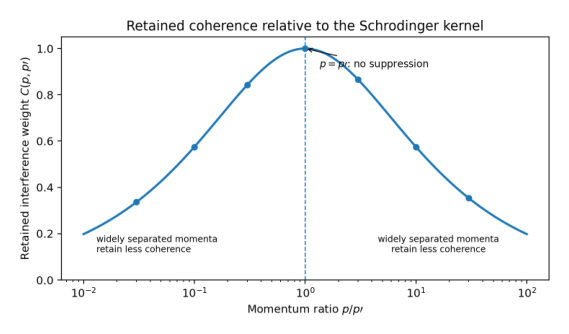
<figcaption class="paper-figure-caption"><b>Fig 1.</b> Figure 1: The coherence attenuation factor C(r) = 2√r/(1 + r). It is unity for equal momenta and decreases symmetrically as the ratio of the two momenta departs from unity.</figcaption>
</figure>
<figure class="paper-figure-card">
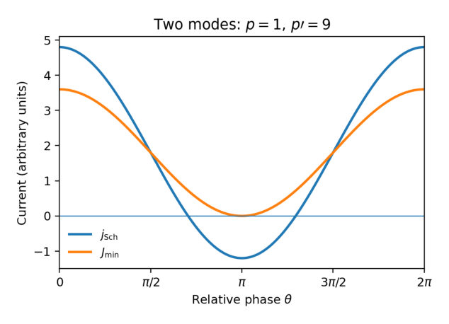
<figcaption class="paper-figure-caption"><b>Fig 2.</b> Figure 2: Two-mode illustration for p1 = 1 and p2 = 9. The minimal kernel reduces the coherent contribution by C(p1, p2) = 3/5. The Schr¨odinger current becomes negative near maximal destructive interference, whereas the minimal current remains nonnegative. The same attenuation also lowers the current in the constructive-interference region.</figcaption>
</figure>
</div>

<p><strong>Summary.</strong> This paper derives the Kijowski time-of-arrival POVM by imposing a minimal positivity constraint on the standard Schrödinger current, which suffers from 'quantum backflow' (negative values). The authors show that the required modification yields a positive, normalized current that naturally separates into independent directional components, providing a physical justification for the POVM's structure.</p>
<p><strong>Why it may be interesting.</strong> This work provides a rigorous, current-based physical derivation for the structure of the Kijowski arrival-time POVM, connecting fundamental principles of current conservation and positivity to a key observable in quantum measurement theory.</p>
<details>
<summary>Detailed structure</summary>
<p><strong>Main problem.</strong> The paper addresses the issue of 'quantum backflow,' where the standard Schrödinger current becomes negative even for states with purely positive momentum support, and seeks to derive a physically meaningful, non-negative arrival-time Probability Operator-Valued Measure (POVM).</p>
<p><strong>Main result.</strong> The minimal modification to the free Schrödinger current, derived by enforcing positivity, results in a current that exactly matches the known Kijowski time-of-arrival POVM. Furthermore, the requirement of no backflow in mixed-sign sectors forces the cross-sector kernel to vanish, leading to a natural separation of the directional components.</p>
<p><strong>Method.</strong> The authors use a minimal positivity constraint on the momentum-space representation of the current, modifying the free-particle kernel from the standard form to a geometric mean kernel, $K_{\min}(p,p') = \sqrt{pp'}/m$.</p>
<p><strong>Model / system.</strong> The analysis is performed for a free particle in one dimension, governed by the Schrödinger equation, focusing on the time-of-arrival observable derived from the momentum-space current.</p>
<p><strong>Key observables.</strong> Schrödinger current ($j_{	ext{Sch}}$), minimal positive current ($J_{	ext{min}}$), and the associated momentum-space kernels ($K_{	ext{Sch}}$ vs $K_{	ext{min}}$).</p>
<p><strong>Important parameters / regimes.</strong> Momentum ($p$), mass ($m$), and time ($t$). The analysis distinguishes between positive-momentum ($p>0$) and negative-momentum ($p<0$) sectors.</p>
<p><strong>Assumptions / limitations.</strong> The construction is based on finding the smallest modification that ensures non-negativity while preserving individual momentum components; it explicitly notes that this construction does not impose a first-arrival condition.</p>
<p><strong>Figures summary.</strong> Figure 1 illustrates the coherence attenuation factor $C(r) = 2\sqrt{r}/(1+r)$. Figure 2 compares the standard Schrödinger current (which can be negative) to the minimal current (which remains non-negative) for a two-mode superposition.</p>
<p><strong>Paper structure.</strong> The paper first defines the problem of quantum backflow in the free Schrödinger current. It then derives the minimal positive kernel modification for single-sign sectors. Finally, it extends the analysis to mixed-sign sectors, showing that the no-backflow condition forces the cross-sector kernels to zero, yielding the sum of two independent directional contributions matching the Kijowski POVM.</p>
</details>
<details>
<summary>Abstract</summary>
<p>Quantum backflow refers here to the appearance of a negative Schrödinger current for a state whose momentum support is entirely positive. We ask for the smallest modification of the free Schrödinger current that makes it nonnegative for every such state, while preserving the current of each individual momentum component. We show that the required minimal modification changes the free-particle momentum kernel according to \[ K_{\rm Sch}(p,p')=\frac{p+p'}{2m} \;\longrightarrow\; K_{\min}(p,p')=\frac{\sqrt{pp'}}{m}. \] The resulting current is positive and normalized and therefore defines an arrival-time POVM. Extending the directional no-backflow requirement to states containing both momentum signs forces the cross-sector kernel to vanish, \[ K_{\min}^{+-}=K_{\min}^{-+}=0, \] so that the full current is the sum of two independent directional contributions. The resulting POVM is exactly the Kijowski time-of-arrival POVM, providing a current-based physical motivation for both its directional kernels and their separation. Within the diagonal-preserving pairwise-minimal construction considered here, the result is unique. The construction itself does not impose a first-arrival condition.</p>
</details>
<p><sub><a href="#top">↑ back to top</a></sub></p>

<p><a id="paper-2609.07875"></a></p>
<h3 id="measurement-induced-remote-activation-of-nonclassicality"><a href="http://arxiv.org/abs/2609.07875v1">Measurement-induced remote activation of nonclassicality</a></h3>
<p><strong>Authors:</strong> Sudip Chakrabarty<br>
<strong>Type:</strong> theory · <strong>Category:</strong> quantum information and computing · <strong>PDF:</strong> <a href="https://arxiv.org/pdf/2609.07875v1">https://arxiv.org/pdf/2609.07875v1</a><br>
<strong>Analysis basis:</strong> full PDF text, analyzed in chunks
<strong>Topic relevance:</strong> 🔥 <code>quantum measurements</code> <strong>4/5</strong></p>
<div class="figure-strip-hint">↔ Scroll figures horizontally</div>
<div class="paper-figures-scroll">
<figure class="paper-figure-card">
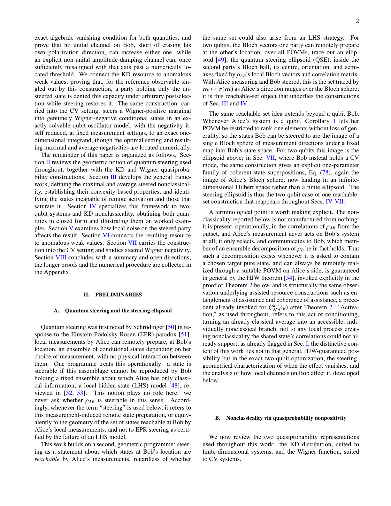
<figcaption class="paper-figure-caption"><b>Fig 1.</b> Low-resolution page preview, page 2</figcaption>
</figure>
<figure class="paper-figure-card">
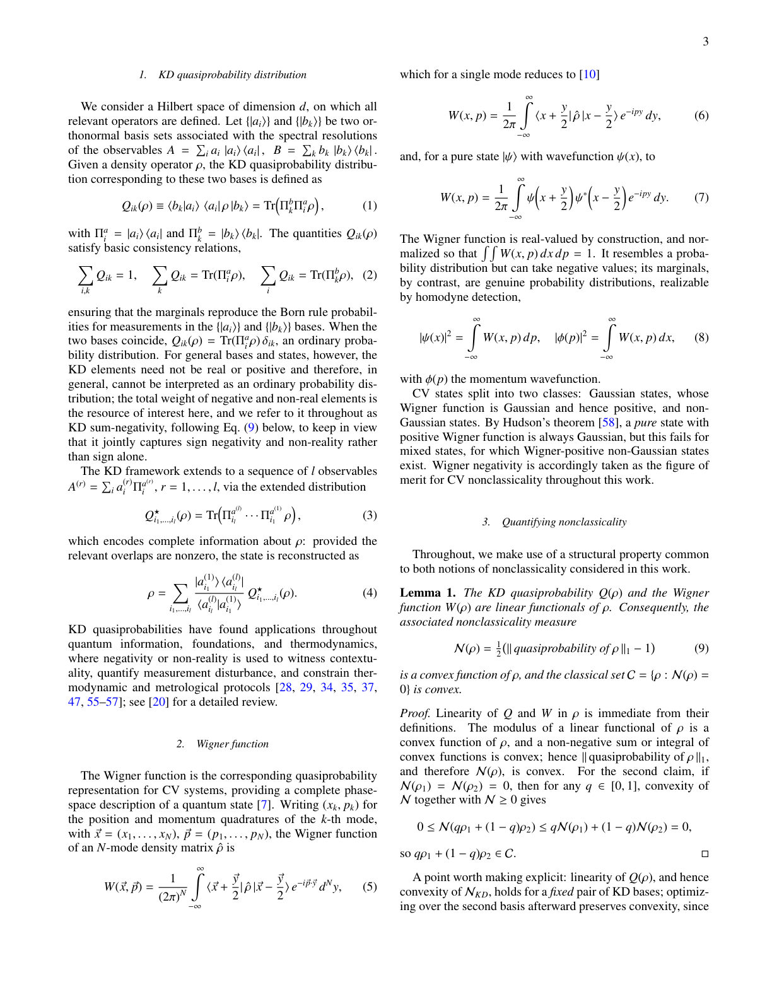
<figcaption class="paper-figure-caption"><b>Fig 2.</b> Low-resolution page preview, page 3</figcaption>
</figure>
<figure class="paper-figure-card">
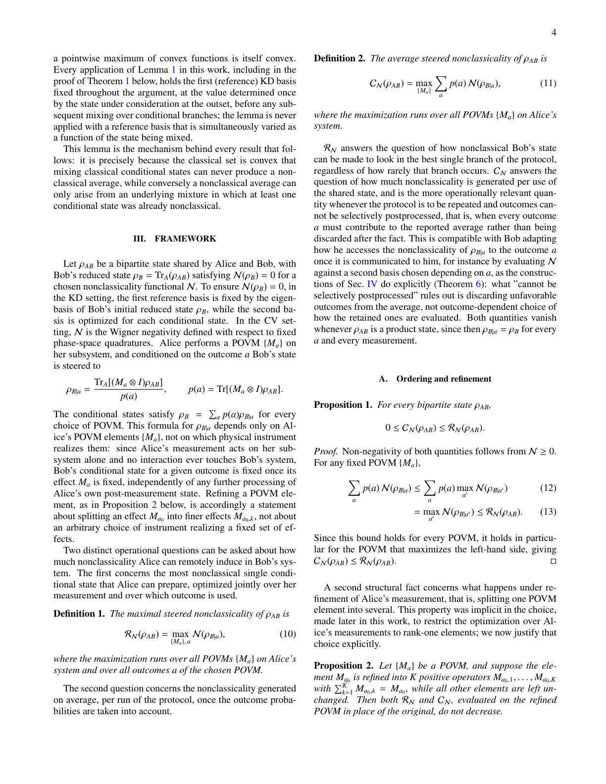
<figcaption class="paper-figure-caption"><b>Fig 3.</b> Low-resolution page preview, page 4</figcaption>
</figure>
<figure class="paper-figure-card">
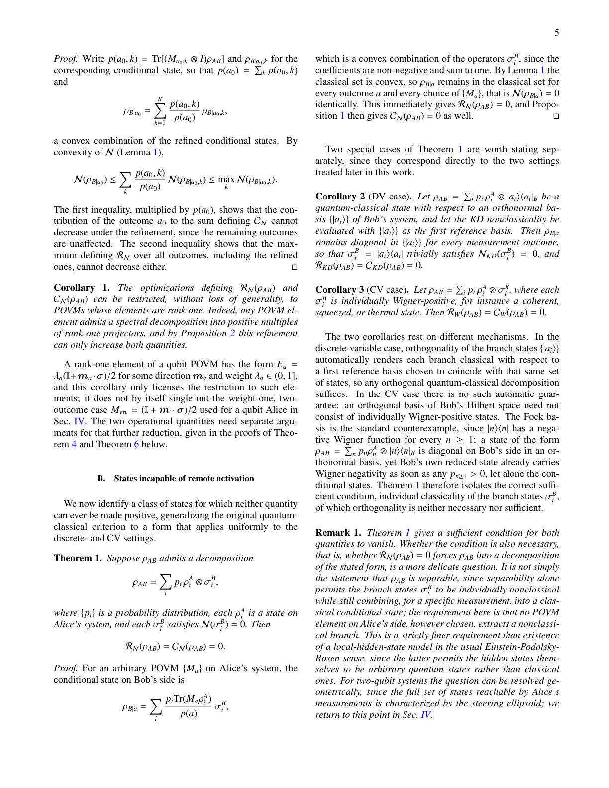
<figcaption class="paper-figure-caption"><b>Fig 4.</b> Low-resolution page preview, page 5</figcaption>
</figure>
<figure class="paper-figure-card">
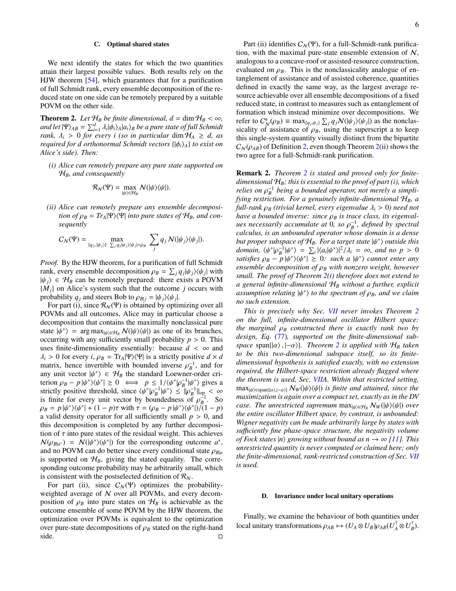
<figcaption class="paper-figure-caption"><b>Fig 5.</b> Low-resolution page preview, page 6</figcaption>
</figure>
</div>

<p><strong>Summary.</strong> This work demonstrates that nonclassical quantum features, such as Wigner negativity, can be remotely activated in a quantum system simply by performing local measurements on a correlated partner. By quantifying this 'steered nonclassicality' using advanced measures, the authors establish measurement-induced steering as a quantifiable resource for quantum information processing.</p>
<p><strong>Why it may be interesting.</strong> It provides a concrete, operational resource (measurement steering) for generating nonclassicality, which is a key resource in quantum information protocols, linking measurement theory directly to fundamental quantum resources.</p>
<details>
<summary>Detailed structure</summary>
<p><strong>Main problem.</strong> The paper investigates the operational mechanism by which local measurements on one subsystem can remotely activate nonclassical quantum features in a correlated partner subsystem.</p>
<p><strong>Main result.</strong> Local measurements can drive a state from a classically described reduced state into a genuinely nonclassical conditional state, establishing measurement-induced steering as a resource for nonclassicality.</p>
<p><strong>Method.</strong> The authors developed formal measures for 'steered nonclassicality' (maximal and average) using quasiprobability distributions (Wigner, KD) and optimized these measures over possible local measurements.</p>
<p><strong>Model / system.</strong> The analysis covers general two-qubit systems and extends to a hybrid qubit-oscillator model for continuous variable (CV) extensions. The core is the bipartite state $\rho_{AB}$ shared between two parties.</p>
<p><strong>Key observables.</strong> Nonclassicality, quantified by Wigner negativity (CV) or KD sum-negativity (DV), and the resulting anomalous weak values.</p>
<p><strong>Important parameters / regimes.</strong> The nature of the local noise channel (unital vs. non-unital) and the alignment of the noise relative to the system's axis.</p>
<p><strong>Assumptions / limitations.</strong> The analysis relies on the convexity of the nonclassicality measure and the ability to restrict the optimization to rank-one POVM elements.</p>
<p><strong>Figures summary.</strong> Not specified, but the notes indicate optimization results for two-qubit and CV quantities, including finding global maxima and verifying numerical stability.</p>
<p><strong>Paper structure.</strong> The paper progresses by defining the problem using nonclassicality diagnostics, developing mathematical tools (Maximal/Average Steered Nonclassicality), optimizing these measures for specific models (two-qubit, qubit-oscillator), and analyzing the physical implications (weak values, noise effects).</p>
</details>
<details>
<summary>Abstract</summary>
<p>Nonclassicality, defined through nonpositivity of quasiprobability distributions such as the Wigner and Kirkwood-Dirac distributions, underlies key quantum advantages. We show that it can be remotely activated: local measurements by a correlated partner alone can drive a party whose reduced state is classical into a genuinely nonclassical conditional state. For two-qubit systems we obtain closed forms for the maximal single-branch effect and for its probability-weighted average under the best two-outcome projective measurement, the latter proven optimal over all measurements when the shared state carries no local bias. Local noise on the steered party, evaluated relative to its own noise-updated reference basis, can enhance the effect when non-unital and misaligned with that party's axis, whereas no unital channel ever helps. This nonclassicality is shown to unlock, for the same reference observable, anomalous weak values unavailable to the unsteered state under arbitrary postselection. An exactly solvable hybrid qubit-oscillator model shows the same mechanism generates Wigner negativity. These results identify measurement-induced steering as an operational resource for remotely activating nonclassicality.</p>
</details>
<p><sub><a href="#top">↑ back to top</a></sub></p>

<p><a id="paper-2609.08168"></a></p>
<h3 id="saving-resources-through-repeat-until-success-positive-operator-valued-measure-measurements-in-quantum-computation"><a href="http://arxiv.org/abs/2609.08168v1">Saving resources through repeat-until-success positive-operator-valued-measure measurements in quantum computation</a></h3>
<p><strong>Authors:</strong> Hefeng Wang, Sixia Yu, Hua Xiang<br>
<strong>Type:</strong> theory · <strong>Category:</strong> quantum information and computing · <strong>PDF:</strong> <a href="https://arxiv.org/pdf/2609.08168v1">https://arxiv.org/pdf/2609.08168v1</a><br>
<strong>Analysis basis:</strong> full PDF text, analyzed in chunks
<strong>Topic relevance:</strong> 🔥 <code>quantum measurements</code> <strong>4/5</strong></p>
<div class="figure-strip-hint">↔ Scroll figures horizontally</div>
<div class="paper-figures-scroll">
<figure class="paper-figure-card">
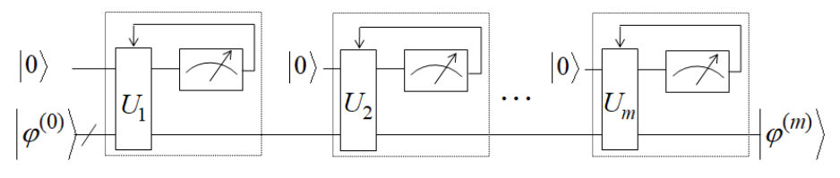
<figcaption class="paper-figure-caption"><b>Fig 1.</b> FIG. 1. Quantum circuit for the RUS-POVM computation process. The circuit in the dashed</figcaption>
</figure>
<figure class="paper-figure-card">
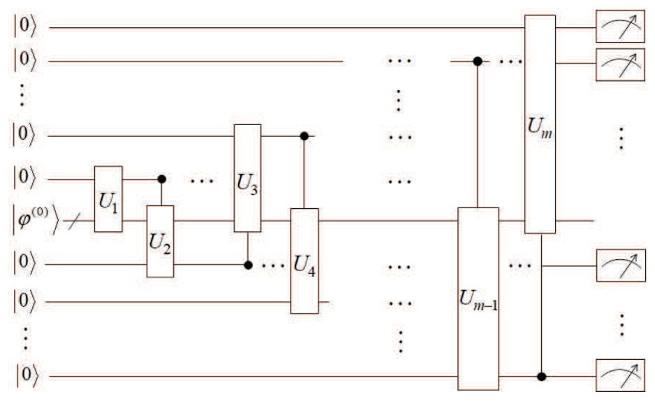
<figcaption class="paper-figure-caption"><b>Fig 2.</b> FIG. 2. Quantum circuit by deferring the intermediate measurements in the RUS-POVM approach</figcaption>
</figure>
<figure class="paper-figure-card">
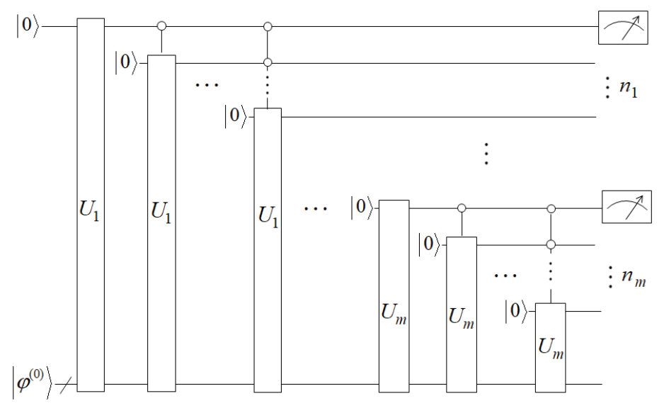
<figcaption class="paper-figure-caption"><b>Fig 3.</b> FIG. 3. Quantum circuit for simulating the RUS-POVM computation process of Fig. 1 by per-</figcaption>
</figure>
</div>

<p><strong>Summary.</strong> This paper proposes a quantum computation scheme that uses intermediate Positive-Operator-Valued-Measure (POVM) measurements within a Repeat-Until-Success (RUS) framework. By performing measurements step-by-step rather than accumulating them, the protocol achieves a polynomial reduction in the required number of qubits and unitary gates compared to standard methods. This demonstrates a significant resource optimization technique for quantum circuit design.</p>
<p><strong>Why it may be interesting.</strong> It provides a concrete, resource-saving protocol for implementing complex quantum algorithms by strategically placing measurements, which is crucial for scaling quantum computation beyond idealized models.</p>
<details>
<summary>Detailed structure</summary>
<p><strong>Main problem.</strong> The paper addresses the resource inefficiency in quantum computation when intermediate measurements are required during a multi-step process.</p>
<p><strong>Main result.</strong> Implementing intermediate measurements using a Repeat-Until-Success (RUS) POVM approach provides a polynomial reduction in required qubits and unitary operations compared to deferring all measurements to the end.</p>
<p><strong>Method.</strong> The core method involves structuring the computation path such that each step is realized as a probabilistic, repeat-until-success measurement on the working qubits, mediated by an ancillary qubit.</p>
<p><strong>Model / system.</strong> The model uses $n$ working qubits and one ancillary qubit. The POVM measurement is physically implemented by applying a controlled unitary operation on the whole system followed by a projective measurement on the ancillary qubit.</p>
<p><strong>Key observables.</strong> Success probability ($P_{	ext{succ}}$), number of required qubits, and count of unitary operations (e.g., Toffoli gates).</p>
<p><strong>Important parameters / regimes.</strong> The success probability $p_k$ of each step, and the time evolution parameters ($t_k$) used in the Quantum Resonance Transfer (QRT) method.</p>
<p><strong>Assumptions / limitations.</strong> The analysis relies on the principle of deferred measurement and assumes that the overlap between adjacent states and the energy gap are polynomially large for the QRT implementation.</p>
<p><strong>Figures summary.</strong> Figures illustrate the quantum circuit for the RUS-POVM process (Fig. 1) and compare it conceptually to the circuit where intermediate measurements are deferred to the end (Fig. 2/3).</p>
<p><strong>Paper structure.</strong> The paper details the RUS-POVM approach (Sec. II), its physical implementation via the QRT method (Sec. III), error analysis (Sec. IV), and a direct comparison of resource scaling against deferred measurement protocols (Sec. V).</p>
</details>
<details>
<summary>Abstract</summary>
<p>We present a quantum computation approach in which computation is guided by positive-operator-valuedmeasure (POVM) measurements following a given computation path in multisteps. In this approach, one ancillary qubit is coupled to a register of working qubits, and a POVM measurement is implemented effectively on the working qubits by applying a unitary operation on the whole system followed by a projective measurement performed on the ancillary qubit. Each step of the computation is a repeat-until-success procedure such that the desired state of the step is obtained deterministically on the working qubits via POVM measurements. The principle of deferred measurement states that measurements can always be moved from an intermediate stage of a quantum circuit to the end of the circuit without affecting the efficiency of the computation.We demonstrate that in our approach, by introducing intermediate measurements on the ancillary qubit in the computation process, both the number of qubits and unitary operations can be reduced polynomially, compared to the case where the intermediate measurements are deferred to the end of the computation. We also provide a method for implementation of the approach.</p>
</details>
<p><sub><a href="#top">↑ back to top</a></sub></p>

<p><a id="paper-2609.08382"></a></p>
<h3 id="non-markovian-dynamics-of-a-qubit-on-the-zigzag-edge-of-photonic-graphene"><a href="http://arxiv.org/abs/2609.08382v1">Non-Markovian dynamics of a qubit on the zigzag edge of photonic graphene</a></h3>
<p><strong>Authors:</strong> Enrico Di Benedetto<br>
<strong>Type:</strong> theory · <strong>Category:</strong> other · <strong>PDF:</strong> <a href="https://arxiv.org/pdf/2609.08382v1">https://arxiv.org/pdf/2609.08382v1</a><br>
<strong>Analysis basis:</strong> full PDF text, analyzed in chunks
<strong>Topic relevance:</strong> <code>Keldysh / 2PI / non-Gaussian methods</code> <strong>3/5</strong> · <code>analog quantum simulation</code> <strong>3/5</strong> · <code>correlated / nonlocal dissipation</code> <strong>3/5</strong> · <code>methods for driven-dissipative</code> <strong>3/5</strong> · <code>driven-dissipative phase transition</code> <strong>2/5</strong> · <code>non-equilibrium universality</code> <strong>2/5</strong> · <code>quantum measurements</code> <strong>1/5</strong> · <code>scars &amp; prethermalization</code> <strong>1/5</strong></p>
<div class="figure-strip-hint">↔ Scroll figures horizontally</div>
<div class="paper-figures-scroll">
<figure class="paper-figure-card">
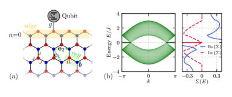
<figcaption class="paper-figure-caption"><b>Fig 1.</b> Fig. 1. – (a) Qubit coupled to the edge located at n=0 at a cavity in the A sublattice. (b) Left panel: energy spectrum of HB as a function of k. Right panel: real and imaginary part of the self-energy Σe(E+i0+). Both panels share the same energy axis. (c) Relative weight of each contribution to the dynamics at t = 0 at different values of ∆/J (g=0.2J). (d) Qubit population over time for g = 0.2J. We can distinguish three regimes: when the two unstable poles’ contributions are relevant (blue curve, ∆=0), when a single unstable pole is relevant (red curve, ∆=1.5J) and when a bound state appears (green curve, ∆=3J).</figcaption>
</figure>
</div>

<p><strong>Summary.</strong> This paper theoretically analyzes how a qubit interacts with the edge of a photonic graphene lattice, finding that the unique zero-energy flat band fundamentally changes the decoherence dynamics. Instead of exhibiting expected long-time power-law decay, the system displays damped Rabi oscillations. This provides crucial insights for designing quantum devices where edge effects dominate coupling to the environment.</p>
<p><strong>Why it may be interesting.</strong> This work is highly relevant as it models open quantum systems dynamics (qubit coupled to a structured bath) using advanced techniques, directly impacting understanding of decoherence in solid-state and photonic platforms.</p>
<details>
<summary>Detailed structure</summary>
<p><strong>Main problem.</strong> The study investigates the non-Markovian dynamics of a qubit coupled to the zigzag edge of a photonic graphene lattice, contrasting it with bulk coupling.</p>
<p><strong>Main result.</strong> The zero-energy flat band at the zigzag edge suppresses long-time branch-cut tails, leading instead to damped Rabi oscillations in the qubit population.</p>
<p><strong>Method.</strong> The analysis employs an analytical resolvent operator approach combined with exact lattice Green's functions to calculate the qubit population dynamics.</p>
<p><strong>Model / system.</strong> The system consists of a qubit coupled to a 2D honeycomb lattice bath modeled with a zigzag edge. The Hamiltonian includes the qubit, the bath, and the coupling term, $H = \Delta\sigma_+\sigma_- + H_B + g(\sigma_+a_{00} + H.c.)$.</p>
<p><strong>Key observables.</strong> Qubit population $P_e(t)$, spectral components (bound states, unstable poles, branch cut detours).</p>
<p><strong>Important parameters / regimes.</strong> Coupling strength ($g$), detuning ($\Delta$), and hopping rate ($J$).</p>
<p><strong>Assumptions / limitations.</strong> The analysis requires analytically continuing Green's functions beyond the first Riemann sheet to manage branch cuts.</p>
<p><strong>Figures summary.</strong> Figures illustrate the energy spectrum showing the zero-energy flat band, and plot the qubit population dynamics over time for various coupling regimes.</p>
<p><strong>Paper structure.</strong> The paper proceeds by setting up the Hamiltonian, deriving the self-energy using Green's functions, and then using the resolvent operator to calculate the time evolution of the qubit population, comparing edge vs. bulk dynamics.</p>
</details>
<details>
<summary>Abstract</summary>
<p>We present an analytical study of the dynamics of a qubit coupled to the zigzag edge of a photonic honeycomb lattice. Leveraging a resolvent operator approach and exact lattice Green's functions, we map the spectrum of qubit-photon bound states and complex poles to uncover the long-time scaling laws of the qubit population. Unlike a qubit coupled to the bulk of graphene, the presence of a zero-energy flat band connecting the Dirac points suppresses long-time branch-cut-induced tails, instead driving damped Rabi oscillations. Potential experimental platforms are briefly discussed.</p>
</details>
<p><sub><a href="#top">↑ back to top</a></sub></p>

<p><a id="paper-2609.08910"></a></p>
<h3 id="on-spatial-decoherence-in-many-body-systems"><a href="http://arxiv.org/abs/2609.08910v1">On spatial decoherence in many-body systems</a></h3>
<p><strong>Authors:</strong> Stefano Marcantoni, Marco Merkli<br>
<strong>Type:</strong> theory · <strong>Category:</strong> other · <strong>PDF:</strong> <a href="https://arxiv.org/pdf/2609.08910v1">https://arxiv.org/pdf/2609.08910v1</a><br>
<strong>Analysis basis:</strong> full PDF text, analyzed in chunks
<strong>Topic relevance:</strong> <code>Keldysh / 2PI / non-Gaussian methods</code> <strong>3/5</strong> · <code>correlated / nonlocal dissipation</code> <strong>3/5</strong> · <code>methods for driven-dissipative</code> <strong>3/5</strong> · <code>driven-dissipative phase transition</code> <strong>2/5</strong> · <code>non-equilibrium universality</code> <strong>2/5</strong> · <code>analog quantum simulation</code> <strong>1/5</strong> · <code>quantum measurements</code> <strong>1/5</strong> · <code>scars &amp; prethermalization</code> <strong>1/5</strong></p>
<div class="figure-strip-hint">↔ Scroll figures horizontally</div>
<div class="paper-figures-scroll">
<figure class="paper-figure-card">
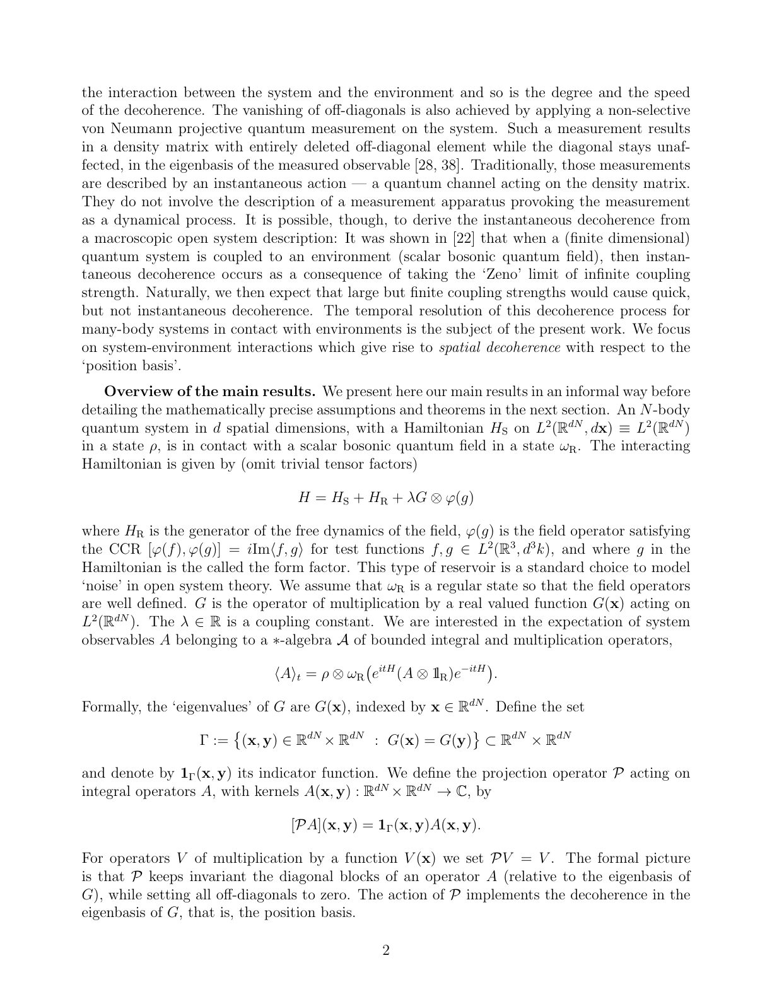
<figcaption class="paper-figure-caption"><b>Fig 1.</b> Low-resolution page preview, page 2</figcaption>
</figure>
<figure class="paper-figure-card">
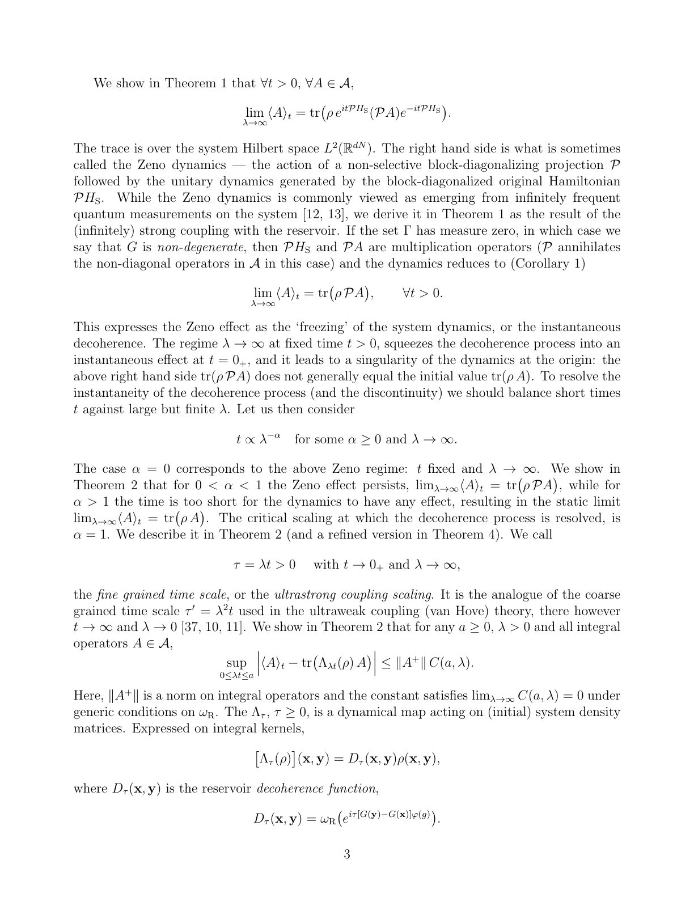
<figcaption class="paper-figure-caption"><b>Fig 2.</b> Low-resolution page preview, page 3</figcaption>
</figure>
<figure class="paper-figure-card">
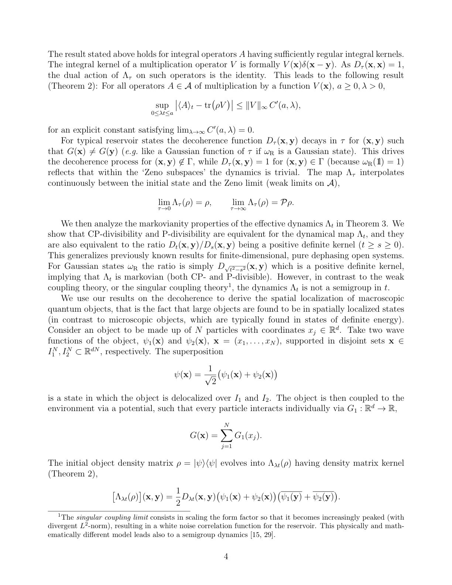
<figcaption class="paper-figure-caption"><b>Fig 3.</b> Low-resolution page preview, page 4</figcaption>
</figure>
<figure class="paper-figure-card">
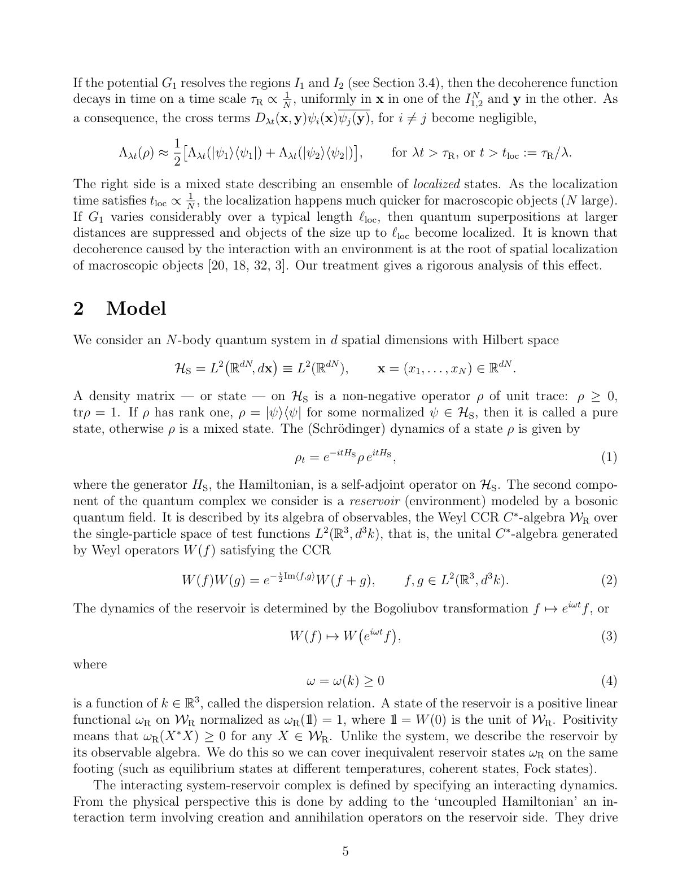
<figcaption class="paper-figure-caption"><b>Fig 4.</b> Low-resolution page preview, page 5</figcaption>
</figure>
<figure class="paper-figure-card">
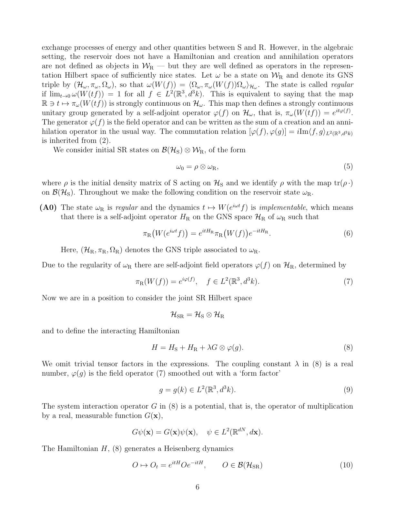
<figcaption class="paper-figure-caption"><b>Fig 5.</b> Low-resolution page preview, page 6</figcaption>
</figure>
</div>

<p><strong>Summary.</strong> This paper rigorously studies spatial decoherence in many-body systems interacting with a bosonic environment. It derives an effective evolution map by analyzing the system dynamics in specific limits of coupling strength and time scaling. The key finding is the identification of a fine-grained time scale $\tau = \lambda t$ that resolves the decoherence process, providing a theoretical description of macroscopic quantum localization.</p>
<p><strong>Why it may be interesting.</strong> This work provides a rigorous, quantitative description of how environmental coupling drives quantum systems toward classical localization, which is central to understanding quantum-to-classical transitions in open quantum systems.</p>
<details>
<summary>Detailed structure</summary>
<p><strong>Main problem.</strong> The paper investigates the dynamics of a many-body quantum system coupled strongly to a bosonic reservoir, focusing specifically on the mechanism and timescale of spatial decoherence.</p>
<p><strong>Main result.</strong> The decoherence process is shown to be exactly resolved at a fine-grained time scale $\tau = \lambda t$, leading to an effective evolution map that is generally Markovian but not described by a standard dynamical semigroup.</p>
<p><strong>Method.</strong> The analysis uses time evolution calculations involving the full Hamiltonian, employing Dyson series expansions and introducing a projection operator $P$ to analyze the system's evolution in different limits of coupling strength ($\lambda$) and time ($t$).</p>
<p><strong>Model / system.</strong> The system consists of an $N$-body quantum system in $d$ dimensions, coupled via a linear potential operator $G$ to a bosonic quantum field reservoir. The dynamics are governed by a total Hamiltonian $H = H_S + H_R + \lambda G \otimes \phi(g)$.</p>
<p><strong>Key observables.</strong> The expectation value of system observables $\langle A \rangle_t$, the density matrix evolution $\rho_t$, and the degree of off-diagonal coherence.</p>
<p><strong>Important parameters / regimes.</strong> The coupling strength $\lambda$, the time $t$, and the crucial scaling parameter $\alpha$ defining the time dependence $t \propto \lambda^{-\alpha}$.</p>
<p><strong>Assumptions / limitations.</strong> The analysis relies on considering the limit of infinite coupling strength ($\lambda \to \infty$) and assumes the reservoir state $\omega_R$ is regular (e.g., Gaussian).</p>
<p><strong>Paper structure.</strong> The paper systematically analyzes the time evolution under different scaling limits of $\lambda$ and $t$, establishing the Zeno limit ($\alpha=0$), the static limit ($\alpha>1$), and deriving the exact effective dynamics for the critical scaling $\alpha=1$.</p>
</details>
<details>
<summary>Abstract</summary>
<p>We study the dynamics of a many-body quantum system strongly interacting with a bosonic reservoir. The coupling is given by a potential operator for the system and it is linear in the field. We show that in the limit of infinite coupling strength the system undergoes instantaneous spatial decoherence. To resolve the decoherence process in time we consider large coupling strengths $λ$ and short times scaling as $t\propto λ^{-α}$, with $α\ge0$, in the limit $λ\rightarrow\infty$. On short time scales $α>1$ the dynamics is trivial while on longer ones $0\leα<1$ the decoherence is instantaneous. We show that the decoherence process is resolved exactly for $α=1$, defining the fine-grained time scale $τ=λt$. We construct an approximate effective evolution map of the many-body system with controlled error estimates. Generically, the effective dynamics is markovian, but not given by a dynamical semigroup. As a physical application we give a rigorous description of the phenomenon of localization of macroscopic quantum objects in position space.</p>
</details>
<p><sub><a href="#top">↑ back to top</a></sub></p>

<p><a id="paper-2609.08820"></a></p>
<h3 id="when-does-nonreciprocity-matter-scale-dependence-and-nonequilibrium-signatures"><a href="http://arxiv.org/abs/2609.08820v1">When does nonreciprocity matter? Scale-dependence and nonequilibrium signatures</a></h3>
<p><strong>Authors:</strong> Sarah A. M. Loos, Robert L. Jack<br>
<strong>Type:</strong> theory · <strong>Category:</strong> statistical mechanics · <strong>PDF:</strong> <a href="https://arxiv.org/pdf/2609.08820v1">https://arxiv.org/pdf/2609.08820v1</a><br>
<strong>Analysis basis:</strong> full PDF text, analyzed in chunks
<strong>Topic relevance:</strong> <code>correlated / nonlocal dissipation</code> <strong>3/5</strong> · <code>driven-dissipative phase transition</code> <strong>3/5</strong> · <code>non-equilibrium universality</code> <strong>3/5</strong> · <code>Keldysh / 2PI / non-Gaussian methods</code> <strong>2/5</strong> · <code>methods for driven-dissipative</code> <strong>2/5</strong> · <code>Frenkel-Kontorova</code> <strong>1/5</strong> · <code>analog quantum simulation</code> <strong>1/5</strong></p>
<div class="figure-strip-hint">↔ Scroll figures horizontally</div>
<div class="paper-figures-scroll">
<figure class="paper-figure-card">
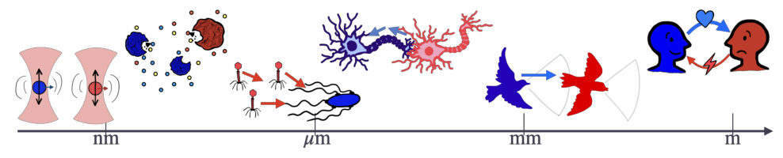
<figcaption class="paper-figure-caption"><b>Fig 1.</b> FIG. 1. Effective nonreciprocal interactions arise in a wide variety of systems, spanning many length scales. Examples include optomechanical levitated nanoparticles, where interference can be used to engineer tunable nonreciprocal couplings [18]; mix- tures of catalytically active and chemophoretic enzymes [3–5, 19]; phage–bacteria systems exhibiting run-and-chase dynamics; neuronal networks with directed information flow; animal and robotic systems interacting through directed perception [20, 21]; and social systems with asymmetric preference or influence [16]. Despite their diverse characteristics, these systems share interaction asymmetry, motivating the search for universal principles...</figcaption>
</figure>
<figure class="paper-figure-card">
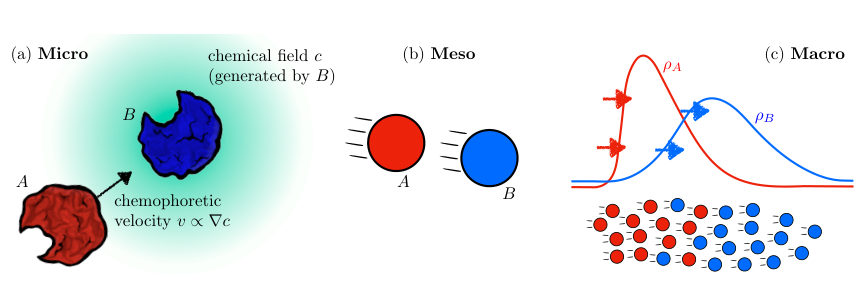
<figcaption class="paper-figure-caption"><b>Fig 2.</b> FIG. 2. Nonreciprocity on different levels of description. (a) Particle A moves chemiphoretically towards particle B (effective attraction) but the force on particle B is only steric repulsion. (b) If the phoretic effect is strong enough, integrating out microscopic details (e.g. the chemical field) yields a mesoscale model of particles with run-and-chase dynamics [3–5, 19]. (c) For many such particles, a macroscale description with continuous density fields supports travelling solutions, where species A chases species B [7, 10]. The NR effective forces are indicated by arrows; they are accompanied by particle currents in the same direction [8].</figcaption>
</figure>
</div>

<p><strong>Summary.</strong> This perspective paper explores nonreciprocity as a key concept in nonequilibrium physics, showing it is fundamentally scale-dependent. The authors develop theoretical tools to track how nonreciprocal interactions, which break time-reversal symmetry, emerge from microscopic details into macroscopic, observable phenomena like sustained currents. It is crucial for understanding irreversible dynamics in complex systems.</p>
<p><strong>Why it may be interesting.</strong> The rigorous mathematical framework connecting nonreciprocity to entropy production and scale-dependence provides powerful tools for analyzing non-equilibrium steady states in complex many-body systems, relevant for understanding energy dissipation in quantum or classical baths.</p>
<details>
<summary>Detailed structure</summary>
<p><strong>Main problem.</strong> The central challenge is understanding when and how nonreciprocity manifests across different physical scales, as it is fundamentally scale-dependent and can emerge or disappear during coarse-graining.</p>
<p><strong>Main result.</strong> Nonreciprocity is an emergent, scale-dependent property, often linked to the breaking of time-reversal symmetry, which leads to qualitatively new dynamics like run-and-chase patterns.</p>
<p><strong>Method.</strong> The analysis employs theoretical frameworks ranging from mesoscale Langevin equations to macroscopic continuum models (like the NRCH equation) to track the emergence of irreversible dynamics.</p>
<p><strong>Model / system.</strong> The study examines diverse nonequilibrium systems, including active matter mixtures, catalytic colloids, and general interacting particle systems, modeled using concepts like 'selfish energies' and nonreciprocal coupling terms.</p>
<p><strong>Key observables.</strong> Stochastic entropy production rate ($\Sigma[\Gamma]$), sustained linear momentum injection, and the appearance of traveling wave solutions.</p>
<p><strong>Important parameters / regimes.</strong> The degree of nonreciprocity (asymmetric couplings $A_{ij} 
eq A_{ji}$), temperature differences ($T_i 
eq T_j$), and the scale of coarse-graining.</p>
<p><strong>Assumptions / limitations.</strong> The analysis often relies on the overdamped limit and gradient expansion for macroscale continuum theories, and assumes that nonreciprocity is a well-defined property of the underlying system.</p>
<p><strong>Figures summary.</strong> Figures illustrate diverse examples of effective nonreciprocal interactions across micro, meso, and macro scales, particularly showing run-and-chase dynamics.</p>
<p><strong>Paper structure.</strong> The paper progresses by establishing nonreciprocity as a unifying concept, detailing its mathematical signatures (TRS breaking) at the mesoscale, and then extending this understanding to macroscopic continuum descriptions and the challenge of scale-dependence.</p>
</details>
<details>
<summary>Abstract</summary>
<p>Nonreciprocity is increasingly recognized as a unifying concept linking diverse nonequilibrium phenomena found across physics, chemistry, and biology. It gives rise to distinctive behavior including run-and-chase dynamics and spatio-temporal patterns, often associated with a breaking of time-reversal symmetry. However, nonreciprocity and its nonequilibrium signatures are fundamentally scale-dependent, and may emerge or disappear under coarse-graining. A central challenge is therefore to understand when and how nonreciprocity manifests itself on different scales, for example via irreversible fluctuations or macroscopic currents. In this Perspective, we discuss the physical origin and fate of effective nonreciprocal interactions and the characteristic irreversible dynamics they give rise to across scales.</p>
</details>
<p><sub><a href="#top">↑ back to top</a></sub></p>

<p><a id="paper-2609.08653"></a></p>
<h3 id="persistence-of-measurement-induced-nonlocality-in-uniformly-accelerating-unruh-dewitt-detectors"><a href="http://arxiv.org/abs/2609.08653v1">Persistence of measurement-induced nonlocality in uniformly accelerating Unruh-DeWitt detectors</a></h3>
<p><strong>Authors:</strong> Shi-Pu Gu, Ming-Ming Du, Yu-Bo Sheng, Lan Zhou<br>
<strong>Type:</strong> theory · <strong>Category:</strong> quantum information and computing · <strong>PDF:</strong> <a href="https://arxiv.org/pdf/2609.08653v1">https://arxiv.org/pdf/2609.08653v1</a><br>
<strong>Analysis basis:</strong> full PDF text, analyzed in chunks
<strong>Topic relevance:</strong> <code>correlated / nonlocal dissipation</code> <strong>3/5</strong> · <code>quantum measurements</code> <strong>3/5</strong> · <code>Keldysh / 2PI / non-Gaussian methods</code> <strong>2/5</strong> · <code>driven-dissipative phase transition</code> <strong>2/5</strong> · <code>methods for driven-dissipative</code> <strong>2/5</strong> · <code>Full counting statistics</code> <strong>1/5</strong> · <code>non-equilibrium universality</code> <strong>1/5</strong></p>
<div class="figure-strip-hint">↔ Scroll figures horizontally</div>
<div class="paper-figures-scroll">
<figure class="paper-figure-card">
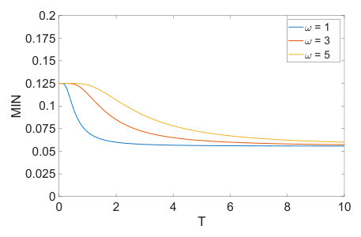
<figcaption class="paper-figure-caption"><b>Fig 1.</b> FIG. 1. MIN as a function of Unruh temperature for ∆0 = −1 with energy gaps ω = 1, 3, 5.</figcaption>
</figure>
<figure class="paper-figure-card">
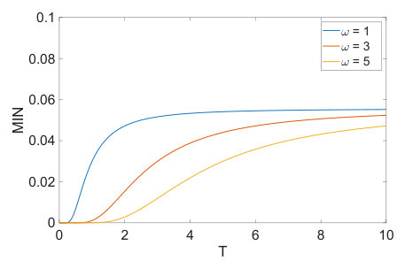
<figcaption class="paper-figure-caption"><b>Fig 2.</b> FIG. 3. MIN as a function of Unruh temperature for ∆0 = 1 with energy gaps ω = 1, 3, 5.</figcaption>
</figure>
<figure class="paper-figure-card">
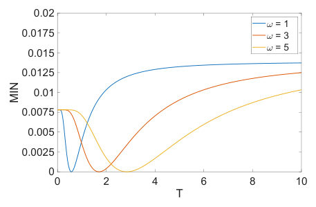
<figcaption class="paper-figure-caption"><b>Fig 3.</b> FIG. 2. MIN as a function of Unruh temperature for ∆0 = 0.5 with energy gaps ω = 1, 3, 5.</figcaption>
</figure>
</div>

<p><strong>Summary.</strong> This theoretical paper investigates how measurement-induced nonlocality (MIN) behaves in two detectors undergoing uniform acceleration in the presence of a quantum field. Contrary to previous expectations that MIN vanishes in strong acceleration, the authors show that the response is highly dependent on the initial quantum state. This demonstrates that acceleration does not universally destroy quantum correlations, offering a nuanced view of quantum information in curved or accelerating spacetime.</p>
<p><strong>Why it may be interesting.</strong> This work directly addresses quantum correlations (MIN) in non-inertial frames, providing insights into how fundamental physical effects like acceleration modify quantum information measures, which is highly relevant to quantum optics and open quantum systems.</p>
<details>
<summary>Detailed structure</summary>
<p><strong>Main problem.</strong> To determine if the suppression of measurement-induced nonlocality (MIN) in accelerating Unruh-DeWitt detectors is a universal consequence of the Unruh effect or if it depends on the specific initial state of the system.</p>
<p><strong>Main result.</strong> The suppression of MIN under strong acceleration is not universal; its behavior can be state-dependent, showing monotonic suppression, recovery, or enhancement, and can approach a nonzero value at high temperatures.</p>
<p><strong>Method.</strong> The authors analyzed the evolution of the reduced density matrix using a master equation approach, calculating MIN as a function of the Unruh temperature and initial state parameters.</p>
<p><strong>Model / system.</strong> The system consists of two uniformly accelerating Unruh-DeWitt detectors coupled to a massless scalar field in Minkowski spacetime. The dynamics are governed by a master equation incorporating the Kubo-Martin-Schwinger (KMS) condition.</p>
<p><strong>Key observables.</strong> Measurement-Induced Nonlocality (MIN), which quantifies the maximal global disturbance induced by local projective measurements.</p>
<p><strong>Important parameters / regimes.</strong> Unruh temperature ($T = a/(2\pi)$), detector energy spacing ($\omega$), coupling strength ($\mu$), and the initial-state parameter ($\Delta_0$).</p>
<p><strong>Assumptions / limitations.</strong> The analysis relies on the weak coupling ($\mu \ll 1$) and Markovian approximations.</p>
<p><strong>Figures summary.</strong> The figures illustrate MIN versus temperature ($T$) for different initial correlation parameters ($\Delta_0$), showing cases of monotonic decrease, nonmonotonic behavior (minimum followed by increase), and monotonic increase.</p>
<p><strong>Paper structure.</strong> The paper establishes the theoretical framework using the detector model and master equation, derives the expression for MIN, and then analyzes the temperature dependence of MIN by examining specific limits and parameter choices.</p>
</details>
<details>
<summary>Abstract</summary>
<p>Uniform acceleration induces a thermal response to the Minkowski vacuum and can thereby modify quantum correlations. For measurement-induced nonlocality (MIN), a form of nonclassical correlation distinct from entanglement, previous field-mode analyses of bosonic fields found that it decreases with increasing acceleration and vanishes in the infinite-acceleration limit. This raises the question of whether the disappearance of MIN is a generic consequence of the Unruh effect or depends on the physical description of the accelerated quantum system. To address this question, we study two uniformly accelerating Unruh-DeWitt detectors interacting with a massless scalar field. We find that the response of MIN to the Unruh temperature depends sensitively on the initial detector state: it can decrease monotonically, vanish at an intermediate temperature and subsequently recover, or increase monotonically. Moreover, for a broad class of initial states, MIN approaches a nonzero value in the high-temperature limit. These results show that the suppression of MIN under strong acceleration is not universal. Instead, Unruh-induced detector dynamics gives rise to a state-dependent response in which measurement-induced nonlocality can be suppressed, restored, or enhanced.</p>
</details>
<p><sub><a href="#top">↑ back to top</a></sub></p>

<p><a id="paper-2609.07831"></a></p>
<h3 id="realization-of-decoherence-induced-averaged-symmetry-protected-topological-phases-on-quantum-processors"><a href="http://arxiv.org/abs/2609.07831v1">Realization of decoherence-induced averaged symmetry-protected topological phases on quantum processors</a></h3>
<p><strong>Authors:</strong> Ruizhe Shen, Xue-Jia Yu, Ching Hua Lee<br>
<strong>Type:</strong> both · <strong>Category:</strong> other · <strong>PDF:</strong> <a href="https://arxiv.org/pdf/2609.07831v1">https://arxiv.org/pdf/2609.07831v1</a><br>
<strong>Analysis basis:</strong> full PDF text, analyzed in chunks
<strong>Topic relevance:</strong> <code>correlated / nonlocal dissipation</code> <strong>3/5</strong> · <code>driven-dissipative phase transition</code> <strong>3/5</strong> · <code>methods for driven-dissipative</code> <strong>3/5</strong> · <code>non-equilibrium universality</code> <strong>2/5</strong> · <code>quantum measurements</code> <strong>2/5</strong> · <code>Keldysh / 2PI / non-Gaussian methods</code> <strong>1/5</strong></p>
<div class="figure-strip-hint">↔ Scroll figures horizontally</div>
<div class="paper-figures-scroll">
<figure class="paper-figure-card">
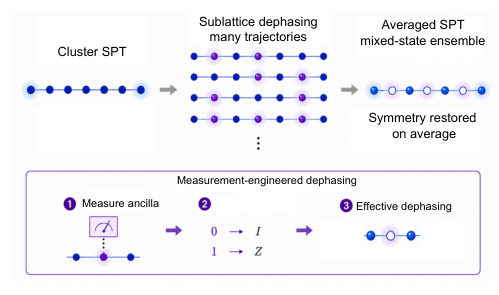
<figcaption class="paper-figure-caption"><b>Fig 1.</b> FIG. 1. Decoherence as a route to ASPT order. Start- ing from a pure cluster SPT with strong symmetry and pro- tected edge/string order, local Pauli-Z dephasing engineered by measurements is applied only to the even sublattice [see Eq. 15]. Each trajectory corresponds to a different proba- bilistic phase-flip pattern. Averaging over these trajectories yields a mixed-state ensemble with weak, average symmetry and persistent topological order.</figcaption>
</figure>
<figure class="paper-figure-card">
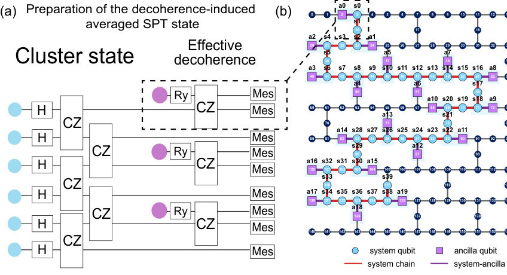
<figcaption class="paper-figure-caption"><b>Fig 2.</b> FIG. 2. Circuit architecture for realizing ASPT order on IBM Quantum hardware. (a), Preparation of the decoherence-induced ASPT state [Eq. 12]. The one-dimensional cluster state is first prepared using Hadamard and nearest- neighbor CZ gates [Eq. 11], followed by local system–ancilla couplings that realize effective Pauli-Z dephasing on the even sublattice [see Fig. 1]. Measuring the ancillas records the corresponding dephasing trajectory [Eq. 8]. (b), Hardware embedding of the circuit in (a). Cyan and purple sites denote system and ancilla qubits, respectively; red links indicate the one-dimensional system chain, whereas purple links denote the system–ancilla couplings used to implement...</figcaption>
</figure>
<figure class="paper-figure-card">
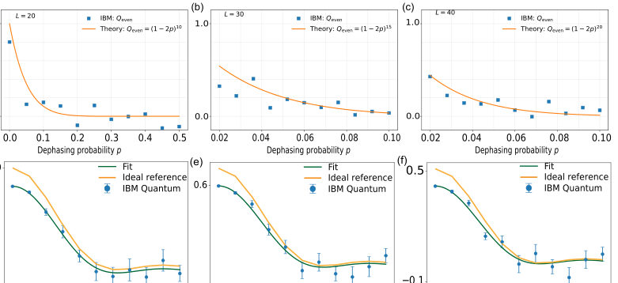
<figcaption class="paper-figure-caption"><b>Fig 3.</b> FIG. 3. Quantum hardware measurements of decoherence-induced symmetry-charge and single-copy string-order decay. (a–c) Measurement of the even-sublattice symmetry charge Qeven defined in Eq. 19 under engineered even-sublattice dephasing. The panels show Qeven as a function of the dephasing probability p for physical chain lengths (a) L = 20, (b) L = 30, and (c) L = 40. Blue markers denote IBM Quantum data, and orange curves show the ideal finite-size prediction in Eq. 22. The suppression of Qeven with increasing p and L reflects the conversion of the even-sublattice symmetry from a strong symmetry to the weak, ensemble-level symmetry described in Eq. 10. (d–f) Single-copy string-order...</figcaption>
</figure>
<figure class="paper-figure-card">
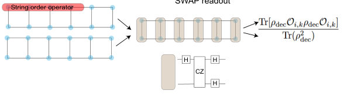
<figcaption class="paper-figure-caption"><b>Fig 4.</b> FIG. 4. Two-replica circuit for measuring the normalized R´enyi-2 string diagnostic of the ASPT phase. a, Hardware embedding of the two-replica experiment. Copies A and B are mapped onto two parallel system-qubit chains, with ancillary qubits coupled to the even sublattice to implement the engineered dephasing channel. The repeated unit-cell structure realizes the same ASPT preparation independently on the two replicas. b, Three-step protocol for measuring the nonlinear string correlator C(2) i,k defined in Eq. 26. Step 1: two independent copies of the decohered cluster state, ρA dec and ρB dec, are prepared using identical ASPT circuits, with independently sampled ancilla outcomes. Step 2:...</figcaption>
</figure>
<figure class="paper-figure-card">
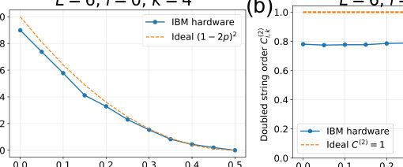
<figcaption class="paper-figure-caption"><b>Fig 5.</b> FIG. 5. Comparison between ordinary and doubled string diagnostics. (a), Single-copy string correlator for the decohered L = 6 cluster chain. The measured signal decreases with increasing dephasing probability p, consistent with the ideal decay in Eq. (23). The corresponding ancilla-assisted dephasing circuit is shown in Fig. 2(b). (b) Normalized R´enyi-2 string correlator C(2) i,k for the decohered cluster chain. In contrast to the single-copy signal, C(2) i,k remains nearly independent of p and close to</figcaption>
</figure>
</div>

<p><strong>Summary.</strong> This paper demonstrates how to engineer and measure decoherence-induced averaged symmetry-protected topological (ASPT) phases on quantum processors. By applying controlled dephasing, the authors convert a pure-state topological order into a mixed-state order, proving that structured decoherence itself can be a resource for realizing complex quantum matter states.</p>
<p><strong>Why it may be interesting.</strong> This work directly addresses the challenge of characterizing topological order in realistic, noisy quantum hardware, which is a major frontier in condensed matter theory and quantum computation.</p>
<details>
<summary>Detailed structure</summary>
<p><strong>Main problem.</strong> The primary goal is to realize and characterize decoherence-induced averaged symmetry-protected topological (ASPT) phases, moving beyond traditional pure-state SPT formulations.</p>
<p><strong>Main result.</strong> The authors establish a gate-based route to engineer and probe ASPT order, demonstrating that structured decoherence can act as a programmable resource for realizing mixed-state topological quantum matter.</p>
<p><strong>Method.</strong> The study uses engineered local Pauli-Z dephasing on a 1D cluster SPT state, diagnosing the resulting mixed state using two-replica Renyi-2 string correlators and analyzing the reduced-density-matrix entanglement spectrum.</p>
<p><strong>Model / system.</strong> The system is a one-dimensional cluster SPT state implemented on programmable quantum processors. The physics involves transitioning from pure-state SPT order to mixed-state ASPT order via controlled decoherence.</p>
<p><strong>Key observables.</strong> Symmetry charge decay ($Q_{	ext{even}}$), two-replica Renyi-2 string correlator ($C^{(2)}_{i,k}$), and the half-chain reduced-density-matrix spectrum.</p>
<p><strong>Important parameters / regimes.</strong> Dephasing probability ($p$), system length ($L$), and the structure of the engineered dephasing channel (sublattice-selective Pauli-Z dephasing).</p>
<p><strong>Assumptions / limitations.</strong> The analysis relies on the ability to implement controlled, local dephasing channels and the use of advanced diagnostics like the two-replica correlator to confirm order at the density-matrix level.</p>
<p><strong>Figures summary.</strong> Figures illustrate the process from pure SPT to mixed ASPT via dephasing, and show hardware measurements of the symmetry charge decay and single-copy string order suppression.</p>
<p><strong>Paper structure.</strong> The paper first introduces the concept of ASPT phases, then details the experimental realization using engineered dephasing on a cluster state, followed by rigorous diagnostics using two-replica correlators and entanglement spectrum analysis, contrasting this with measurement-and-feedback protocols.</p>
</details>
<details>
<summary>Abstract</summary>
<p>Symmetry-protected topological (SPT) phases are conventionally formulated for pure states protected by exact symmetries. In open quantum systems, however, decoherence generates mixed-state ensembles in which average symmetry can instead emerge only after averaging over microscopic trajectories. In this work, we realize decoherence-induced averaged SPT (ASPT) order on programmable quantum processors. Starting from a one-dimensional cluster SPT, we engineer sublattice-selective Pauli-$Z$ dephasing through ancilla-assisted quantum circuits. We observe the resulting symmetry conversion through the decay of the symmetry charge. Moreover, a two-replica Renyi-2 string correlator measured through destructive SWAP readout remains nontrivial, revealing the ASPT structure encoded at the density-matrix level. We further show that the engineered dephasing redistributes spectral weight among reduced-stabilizer sectors while preserving the characteristic twofold pairing of the half-chain entanglement spectrum. These results establish a gate-based route to engineering and probing ASPT order and demonstrate structured decoherence as a programmable resource for realizing mixed-state topological quantum matter.</p>
</details>
<p><sub><a href="#top">↑ back to top</a></sub></p>

<p><a id="paper-2609.09114"></a></p>
<h3 id="hydrodynamic-attractors"><a href="http://arxiv.org/abs/2609.09114v1">Hydrodynamic attractors</a></h3>
<p><strong>Authors:</strong> Tilman Enss, Michal P. Heller, Alexandre Serantes, Clemens Werthmann<br>
<strong>Type:</strong> theory · <strong>Category:</strong> quantum gases · <strong>PDF:</strong> <a href="https://arxiv.org/pdf/2609.09114v1">https://arxiv.org/pdf/2609.09114v1</a><br>
<strong>Analysis basis:</strong> full PDF text, analyzed in chunks
<strong>Topic relevance:</strong> <code>Keldysh / 2PI / non-Gaussian methods</code> <strong>3/5</strong> · <code>analog quantum simulation</code> <strong>3/5</strong> · <code>non-equilibrium universality</code> <strong>3/5</strong> · <code>methods for driven-dissipative</code> <strong>2/5</strong> · <code>scars &amp; prethermalization</code> <strong>1/5</strong></p>
<div class="figure-strip-hint">↔ Scroll figures horizontally</div>
<div class="paper-figures-scroll">
<figure class="paper-figure-card">
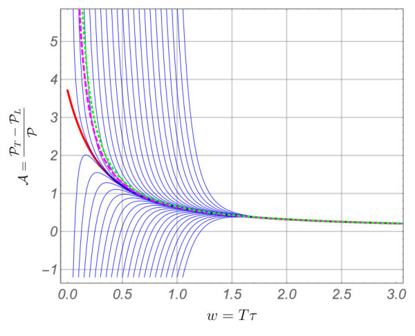
<figcaption class="paper-figure-caption"><b>Fig 1.</b> Figure 1. Numerical solutions with different initial values of the pressure anisotropy A approach a common evolution. The red curve is the stable regular solution A⋆(w) selected by the pullback limit, while the dashed magenta and the green dotted curves are approximations to the attractor given by the hydrodynamic gradient expansion truncated at first and second order respectively. The values of the parameters in the model have been chosen to match those of N = 4 SUSY YM theory in the holographic limit. Adapted from Ref. [25].</figcaption>
</figure>
<figure class="paper-figure-card">
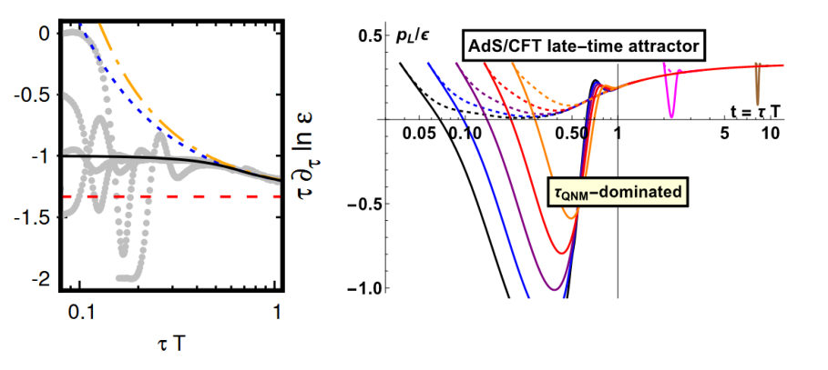
<figcaption class="paper-figure-caption"><b>Fig 2.</b> Figure 2. Early- and late-time behavior in holographic Bjorken flow. Left: adapted version of the AdS/CFT panel of Fig. 1 in Ref. [30]. Grey curves show numerical histories obtained from different bulk initial states, the solid black curve is the smooth attractor candidate, and the broken colored curves denote successive hydrodynamic approximations. The candidate approaches τ∂τ log ε = −1 toward small w = τT. Right: the holographic panel of Fig. 1 in Ref. [36]. Different colors denote different initialization times, while dashed and solid curves correspond, respectively, to the UV-localized and IR-extended families of bulk profiles; the red curve denotes the late-time attractor. Although...</figcaption>
</figure>
<figure class="paper-figure-card">
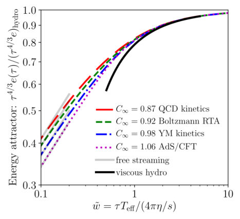
<figcaption class="paper-figure-caption"><b>Fig 3.</b> Figure 3. Evolution of the energy attractor E( ˜w) in different dynamical descriptions, which feature different total amount of cooling and therefore different values of C∞. Taken from [56].</figcaption>
</figure>
<figure class="paper-figure-card">

<figcaption class="paper-figure-caption"><b>Fig 4.</b> Fig. 3 shows the evolution of this attractor curve for several different dynamical descriptions. As it turns out, the differences between different descriptions are not too large, with C∞ ranging between 0.87 and 1.06.</figcaption>
</figure>
<figure class="paper-figure-card">
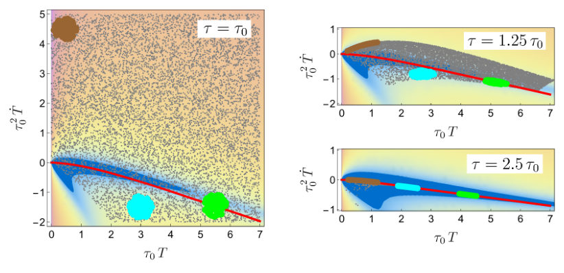
<figcaption class="paper-figure-caption"><b>Fig 5.</b> Figure 4. Three snapshots of the evolution of an ensemble of initial states in conformal MIS theory, adapted from Ref. [33]. The red curve is the section M⋆(τ) of the attracting hypersurface on the corresponding constant-τ slice. The colored ensembles illustrate local dimensional reduction: they first become narrow, effectively one-dimensional clouds, subsequently approach the attracting section, and finally evolve along it. The background color represents the magnitude of the state-space velocity, with bluer regions corresponding to slower evolution. The plots use Cη = 0.75 and Cτπ = 1.</figcaption>
</figure>
</div>

<p><strong>Summary.</strong> This work explores the concept of hydrodynamic attractors, which describe how complex, non-equilibrium systems approach a simple, low-dimensional late-time behavior. It rigorously distinguishes this 'attractorization' from the 'hydrodynamization' process, comparing results from nuclear collisions and ultracold atomic gases. The findings provide a unified theoretical framework for understanding how fluid dynamics emerge from microscopic interactions.</p>
<p><strong>Why it may be interesting.</strong> The explicit inclusion and comparison with ultracold Fermi gases provides a direct theoretical link between high-energy heavy-ion physics and controllable AMO systems.</p>
<details>
<summary>Detailed structure</summary>
<p><strong>Main problem.</strong> The paper aims to distinguish between 'attractorization' (loss of initial state sensitivity) and 'hydrodynamization' (onset of hydrodynamic validity) in non-equilibrium systems.</p>
<p><strong>Main result.</strong> Hydrodynamic attractors are effective low-dimensional structures that govern late-time evolution, and this concept extends constitutive relations beyond local thermal equilibrium.</p>
<p><strong>Method.</strong> The authors compare multiple theoretical frameworks—including kinetic theory, holography, and Israel-Stewart-type theories—using conformal, boost-invariant Bjorken flow as the primary setting.</p>
<p><strong>Model / system.</strong> The study applies to high-energy nuclear collisions (QGP) and ultracold atomic gases, utilizing theoretical tools like divergent gradient expansions and transseries completions.</p>
<p><strong>Key observables.</strong> Particle production, transverse energy, flow observables, shear/bulk viscosity, and the evolution of the stress-energy tensor.</p>
<p><strong>Important parameters / regimes.</strong> Proper time ($  au$), temperature ($T$), and dimensionless parameters related to viscosity ($\eta/s$).</p>
<p><strong>Assumptions / limitations.</strong> The analysis often relies on the conformal, boost-invariant Bjorken flow approximation, and it distinguishes between attractorization and hydrodynamization.</p>
<p><strong>Paper structure.</strong> The paper is structured by comparing different theoretical approaches (MIS, kinetic theory, holography) to understand the transition from far-from-equilibrium dynamics to hydrodynamic behavior, detailing different types of attraction.</p>
</details>
<details>
<summary>Abstract</summary>
<p>Attractors are effective low-dimensional structures, defined in a chosen set of observables, that trajectories from different initial states approach; hydrodynamic attractors are those on which the late-time evolution is governed by hydrodynamic constitutive relations. Motivated by nuclear collisions and ultracold atomic gases, this chapter distinguishes attractorization (the loss of sensitivity to some directions in the space of initial states) from hydrodynamization (the onset of validity of hydrodynamic constitutive relations). Using mainly conformal, boost-invariant Bjorken flow, we compare Müller-Israel-Stewart-type theories, kinetic theory, holography, and classical Yang-Mills fields. Forward attraction, produced by the decay of non-hydrodynamic modes, is distinguished from pullback attraction, which can select a unique regular solution, and from expansion-driven attraction, which can suppress initial-state sensitivity before microscopic relaxation, with or without a subsequent fluid regime. Divergent gradient expansions and their transseries completions, the state-space picture, and adiabatic hydrodynamization provide complementary descriptions. Applications to nuclear collisions include particle production, transverse energy and flow, the initialization of and linear response around attracting backgrounds, jet quenching, and attractor-informed modifications of hydrodynamic models. For ultracold Fermi gases, we review theoretical proposals for bulk-channel attractors under scattering-length drives and distinguish them from recent measurements of short-time contact and momentum-distribution dynamics.</p>
</details>
<p><sub><a href="#top">↑ back to top</a></sub></p>

<p><a id="paper-2609.08285"></a></p>
<h3 id="physics-of-information-geometry-part-i-principle-of-least-action-on-the-probability-simplex"><a href="http://arxiv.org/abs/2609.08285v1">Physics of Information Geometry - Part I: Principle of Least Action on the Probability Simplex</a></h3>
<p><strong>Authors:</strong> C. Emre Koksal, Deniz Sargun<br>
<strong>Type:</strong> theory · <strong>Category:</strong> statistical mechanics · <strong>PDF:</strong> <a href="https://arxiv.org/pdf/2609.08285v1">https://arxiv.org/pdf/2609.08285v1</a><br>
<strong>Analysis basis:</strong> full PDF text, analyzed in chunks
<strong>Topic relevance:</strong> <code>non-equilibrium universality</code> <strong>3/5</strong> · <code>Keldysh / 2PI / non-Gaussian methods</code> <strong>2/5</strong> · <code>methods for driven-dissipative</code> <strong>2/5</strong> · <code>analog quantum simulation</code> <strong>1/5</strong> · <code>correlated / nonlocal dissipation</code> <strong>1/5</strong> · <code>driven-dissipative phase transition</code> <strong>1/5</strong> · <code>quantum measurements</code> <strong>1/5</strong></p>
<div class="figure-strip-hint">↔ Scroll figures horizontally</div>
<div class="paper-figures-scroll">
<figure class="paper-figure-card">

<figcaption class="paper-figure-caption"><b>Fig 1.</b> Fig. 1. Backward information-projection construction. The KL ball Bδ(qt) = {q : DKL(qt∥q) ≤δ} is centered at qt, and q⋆ t−1 is its information projection toward the Gibbs distribution q0. Read in the forward direction, DKL(qt∥q⋆ t−1) is the kinetic en- ergy of the step, while the Pythagorean inequality relates this cost directly to the corresponding increase in Gibbs-referenced free energy.</figcaption>
</figure>
<figure class="paper-figure-card">
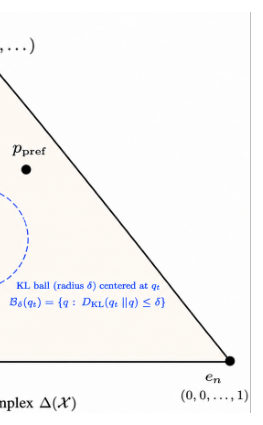
<figcaption class="paper-figure-caption"><b>Fig 2.</b> Figure 1 illustrates the geometry. The KL ball is centered at qt in the diver- gence sense DKL(qt∥q) ≤δ, and q⋆ t−1 is selected by projection toward q0. Read forward, the radius DKL(qt∥q⋆ t−1) is exactly the kinetic energy of the step. Although the construction proceeds backward, the physical trajectory is read forward as q0 →q⋆ 1 →· · · →qT = ppref. Hence the ball radius is precisely the kinetic-energy budget of the corresponding forward transition,</figcaption>
</figure>
<figure class="paper-figure-card">
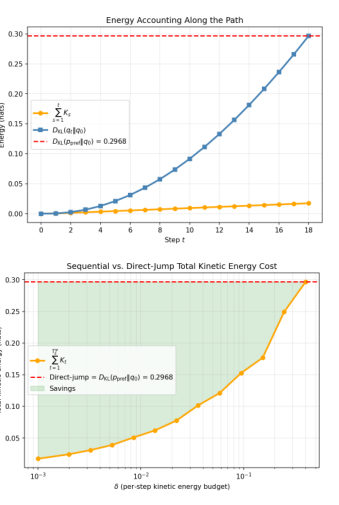
<figcaption class="paper-figure-caption"><b>Fig 3.</b> Fig. 2. Numerical results for q0 = (1/3, 1/3, 1/3), ppref = (0.7, 0.2, 0.1), with DKL(ppref∥q0) ≈0.297 nats. Top-left: Least-action trajectory on the simplex with δ = 0.001 (T = 18 steps) over the free-energy landscape DKL(q∥q0). Top-right: Run- ning nonequilibrium free energy DKL(qt∥q0) and cumulative kinetic cost P</figcaption>
</figure>
</div>

<p><strong>Summary.</strong> This work introduces a least-action framework to model how a probability distribution evolves from equilibrium to a target state. It mathematically unifies concepts from information geometry and non-equilibrium thermodynamics by showing that the path minimizes an action functional. This provides a powerful, geometrically grounded tool for analyzing irreversible processes in statistical physics.</p>
<p><strong>Why it may be interesting.</strong> The rigorous connection between path dynamics (kinetics) and thermodynamic potentials (free energy) using information geometry provides a powerful, general framework applicable to non-equilibrium quantum dynamics and open quantum systems.</p>
<details>
<summary>Detailed structure</summary>
<p><strong>Main problem.</strong> The paper develops a least-action framework to describe the evolution of a probability distribution from an equilibrium state to a non-equilibrium target state under constrained changes.</p>
<p><strong>Main result.</strong> It establishes that the path follows a least-action principle governed by information geometry, yielding an energy-conservation-like relation between accumulated free energy and kinetic expenditure.</p>
<p><strong>Method.</strong> The authors combine the thermodynamic concept of relative free energy (using KL divergence) with information-geometric projections to define a path minimizing an action functional.</p>
<p><strong>Model / system.</strong> The system is the evolution of a probability distribution on the probability simplex, starting from a Gibbs equilibrium reference state and moving towards a prescribed non-equilibrium state.</p>
<p><strong>Key observables.</strong> Nonequilibrium free energy excess ($D_{KL}(p\|q_0)$), informational kinetic cost ($D_{KL}(q_t\|q_{t-1})$), and the relative free energy ($F_r$).</p>
<p><strong>Important parameters / regimes.</strong> The kinetic constraint $\delta$ (maximum informational displacement) and the path penalty parameter $\gamma$ (for state-dependent costs).</p>
<p><strong>Assumptions / limitations.</strong> The local projection problem is assumed to be convex, and the analysis relies on the geometric structure provided by the KL divergence.</p>
<p><strong>Paper structure.</strong> The paper builds the framework by defining the relative free energy and kinetic cost, deriving the path constraints via information projection, solving the resulting least-action minimization problem using the Lambert W function, and finally interpreting the results thermodynamically.</p>
</details>
<details>
<summary>Abstract</summary>
<p>We develop a least-action framework for describing how a probability distribution can evolve from an equilibrium state to a prescribed nonequilibrium state under constrained incremental changes. Taking a Gibbs distribution as the equilibrium reference, the framework gives a direct physical meaning to the geometry of the probability simplex: distance from equilibrium corresponds to nonequilibrium free energy, while changes between successive distributions carry an informational kinetic cost. The Pythagorean structure of relative entropy then provides the central insight of the work. It shows that intermediate distributions chosen via sequential information projections can reduce the kinetic cost of large transitions and establishes an energy-conservation-like relation between the kinetic expenditure along a path and the free energy accumulated in reaching the target distribution. Motivated by this geometry, we construct a greedy least-action path through successive information projections, obtain a closed-form characterization of each projection through the Lambert W function, and establish a finite-step performance guarantee. We further show that state-dependent costs can be incorporated naturally by reshaping the underlying Gibbs reference, providing a thermodynamic interpretation of path penalties as modifications of the effective energy landscape. Together, these results provide a unified view of distributional evolution through least action, information geometry, and nonequilibrium thermodynamics.</p>
</details>
<p><sub><a href="#top">↑ back to top</a></sub></p>

<p><a id="paper-2609.08555"></a></p>
<h3 id="kinematic-control-and-dephasing-dynamics-of-quantum-resources-in-math224math"><a href="http://arxiv.org/abs/2609.08555v1">Kinematic Control and Dephasing Dynamics of Quantum Resources in $e^{+}e^{-}\toτ^{+}τ^{-}$</a></h3>
<p><strong>Authors:</strong> Elhabib Jaloum, Omar Bachain, Mohamed Amazioug, Rachid Ahl Laamara<br>
<strong>Type:</strong> theory · <strong>Category:</strong> other · <strong>PDF:</strong> <a href="https://arxiv.org/pdf/2609.08555v1">https://arxiv.org/pdf/2609.08555v1</a><br>
<strong>Analysis basis:</strong> full PDF text, analyzed in chunks
<strong>Topic relevance:</strong> <code>correlated / nonlocal dissipation</code> <strong>3/5</strong> · <code>methods for driven-dissipative</code> <strong>2/5</strong> · <code>Keldysh / 2PI / non-Gaussian methods</code> <strong>1/5</strong> · <code>driven-dissipative phase transition</code> <strong>1/5</strong> · <code>non-equilibrium universality</code> <strong>1/5</strong> · <code>quantum measurements</code> <strong>1/5</strong></p>
<div class="figure-strip-hint">↔ Scroll figures horizontally</div>
<div class="paper-figures-scroll">
<figure class="paper-figure-card">
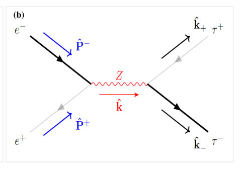
<figcaption class="paper-figure-caption"><b>Fig 1.</b> FIG. 1: Feynman diagrams for τ+τ−production via the Drell–Yan mechanism at hadron colliders.</figcaption>
</figure>
<figure class="paper-figure-card">
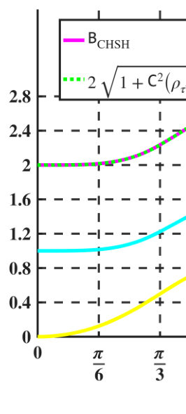
<figcaption class="paper-figure-caption"><b>Fig 2.</b> FIG. 2: The measures BCHSH = 2 √max {B1, B2}, 2 p</figcaption>
</figure>
<figure class="paper-figure-card">
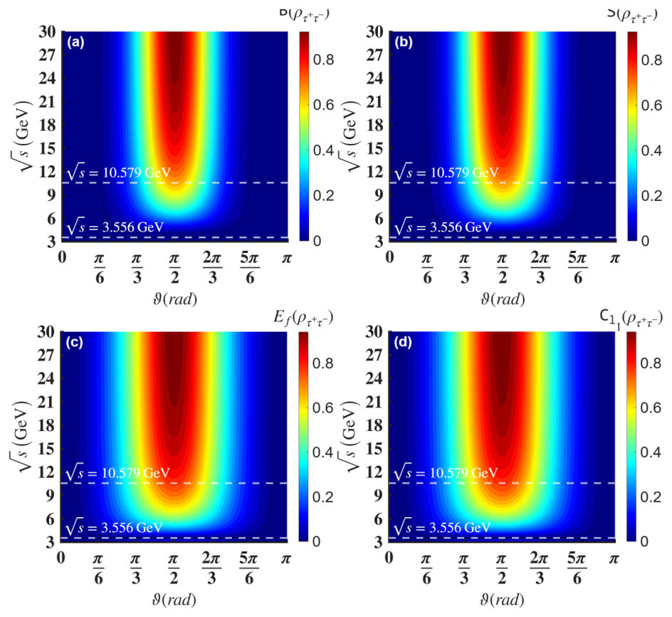
<figcaption class="paper-figure-caption"><b>Fig 3.</b> FIG. 3: Bell nonlocality B(ρτ+τ−), quantum steering S(ρτ+τ−), entanglement of formation E f (ρτ+τ−), and quantum coherence Cl1(ρτ+τ−) as functions of the center-of-mass energy squared √s and the scattering angle ϑ of the τ lepton for the process e+e−→τ+τ−.</figcaption>
</figure>
<figure class="paper-figure-card">
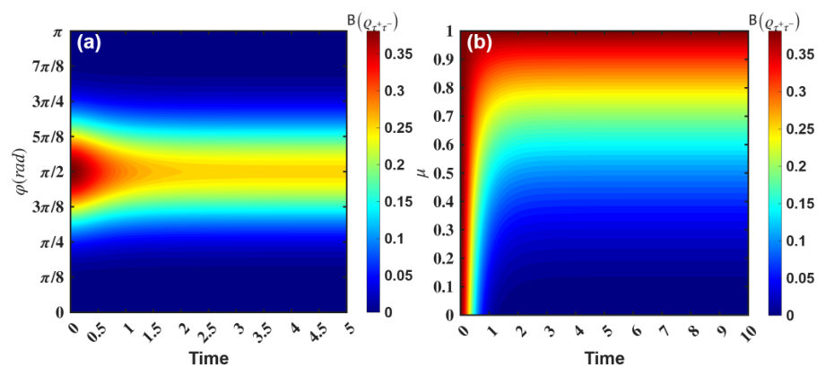
<figcaption class="paper-figure-caption"><b>Fig 4.</b> FIG. 4: Time evolution of the Bell nonlocality B(ϱτ+τ−) in the Markovian regime (τ = 0.2) for (a) fixed classical correlation parameter µ = 0.8 and (b) fixed scattering angle ϑ = π/2. The center-of-mass energy and the τ-lepton mass are set to √s = 10.579 GeV and mτ = 1.777 GeV, respectively.</figcaption>
</figure>
<figure class="paper-figure-card">
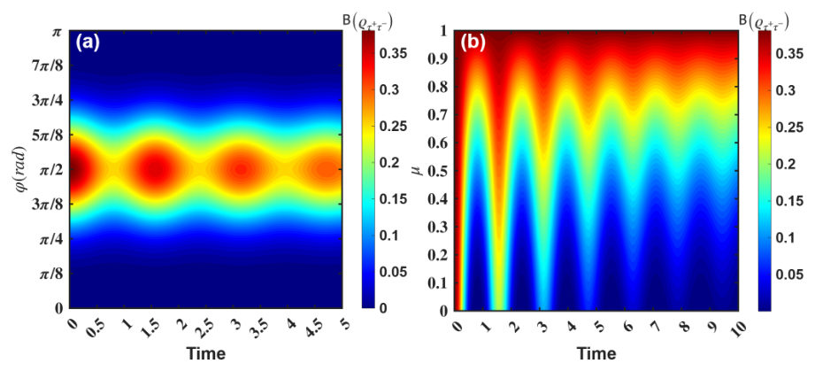
<figcaption class="paper-figure-caption"><b>Fig 5.</b> FIG. 5: Time evolution of the Bell nonlocality B(ϱτ+τ−) in the non-Markovian regime (τ = 5) for (a) fixed classical correlation parameter µ = 0.8 and (b) fixed scattering angle ϑ = π/2. The center-of-mass energy and the τ-lepton mass are set to √s = 10.579 GeV and mτ = 1.777 GeV, respectively.</figcaption>
</figure>
</div>

<p><strong>Summary.</strong> This work investigates the quantum correlations present in the spin state of $\tau^+\tau^-$ pairs created in $e^+e^-$ collisions. It quantifies these resources using multiple entanglement and nonlocality measures, showing they peak at transverse emission. Crucially, it models decoherence, demonstrating that environmental memory can cause revivals absent in simple Markovian decay.</p>
<p><strong>Why it may be interesting.</strong> The explicit separation of kinematic correlation generation from environmental noise dynamics provides a powerful framework for understanding resource preservation in particle physics processes.</p>
<details>
<summary>Detailed structure</summary>
<p><strong>Main problem.</strong> The paper characterizes quantum resources (nonlocality, entanglement, coherence) carried by the spins of $\tau^+\tau^-$ pairs produced in $e^+e^-$ annihilation and analyzes how these resources decay due to environmental decoherence.</p>
<p><strong>Main result.</strong> The spin correlations exhibit a common kinematic origin connecting the threshold state to the Bell-state limit, and the decoherence analysis distinguishes between memory-generating non-Markovian revivals and simple Markovian decay.</p>
<p><strong>Method.</strong> The analysis uses quantum information diagnostics (CHSH, Concurrence, etc.) applied to the spin density matrix, followed by propagating the state through a phenomenological correlated-dephasing channel.</p>
<p><strong>Model / system.</strong> The system is the spin state of a $\tau^+\tau^-$ pair produced in $e^+e^-$ annihilation at $\sqrt{s}=10.579 \text{ GeV}$. The state is modeled as a two-qubit system evolving under both kinematic constraints and environmental noise.</p>
<p><strong>Key observables.</strong> Bell nonlocality (CHSH), steerability, entanglement of formation (Concurrence), and coherence ($\mathcal{C}_{l1}$).</p>
<p><strong>Important parameters / regimes.</strong> Production angle ($\vartheta$), center-of-mass energy ($\sqrt{s}$), and decoherence time scales ($\tau, \mu$).</p>
<p><strong>Assumptions / limitations.</strong> The analysis assumes the Born-level reaction $e^+e^- \to \tau^+\tau^-$ and uses a phenomenological correlated-dephasing channel.</p>
<p><strong>Figures summary.</strong> Figures illustrate the Feynman diagrams for production and show the temporal evolution of steering measures in both Markovian (rapid decay) and non-Markovian (oscillatory revivals) regimes.</p>
<p><strong>Paper structure.</strong> The paper first establishes the kinematic dependence of quantum resources, showing their maximum at transverse emission. It then analyzes the evolution of these resources under decoherence, contrasting Markovian decay with non-Markovian memory effects.</p>
</details>
<details>
<summary>Abstract</summary>
<p>We characterize several quantum resources carried by the spins of the $τ^{+}τ^{-}$ pair produced in $e^{+}e^{-}$ annihilation. At the Belle-II energy, $\sqrt{s}=10.579\,\mathrm{GeV}$, Bell nonlocality, steerability, entanglement of formation, and coherence are governed by the production angle and are largest for transverse emission, $\vartheta=π/2$. Their common kinematic origin is exposed by expressing the spin state as a velocity and angle-dependent mixture of a separable contribution and a maximally entangled component. Within the physical production domain, this representation connects the weakly correlated threshold state at $\sqrt{s}=2m_τ$ to the Bell-state limit approached at ultrarelativistic energies. We then propagate the two-spin state through a phenomenological correlated-dephasing channel to determine how environmental memory and inter-channel classical correlations affect the available resources. Memory effects generate collapses and revivals that are absent from the monotonic Markovian evolution. The analysis therefore separates the kinematic mechanism that creates the spin correlations from the noise properties that control their subsequent survival.</p>
</details>
<p><sub><a href="#top">↑ back to top</a></sub></p>

<p><a id="paper-2609.08727"></a></p>
<h3 id="adaptive-ai-for-pulse-level-quantum-control"><a href="http://arxiv.org/abs/2609.08727v1">Adaptive AI for Pulse-Level Quantum Control</a></h3>
<p><strong>Authors:</strong> Sanjeev Shapkota, Yayu Mo, Sanjaya Lohani<br>
<strong>Type:</strong> theory · <strong>Category:</strong> quantum information and computing · <strong>PDF:</strong> <a href="https://arxiv.org/pdf/2609.08727v1">https://arxiv.org/pdf/2609.08727v1</a><br>
<strong>Analysis basis:</strong> full PDF text, analyzed in chunks
<strong>Topic relevance:</strong> <code>QC/QI experiment</code> <strong>3/5</strong> · <code>methods for driven-dissipative</code> <strong>2/5</strong> · <code>quantum measurements</code> <strong>2/5</strong> · <code>analog quantum simulation</code> <strong>1/5</strong></p>
<div class="figure-strip-hint">↔ Scroll figures horizontally</div>
<div class="paper-figures-scroll">
<figure class="paper-figure-card">
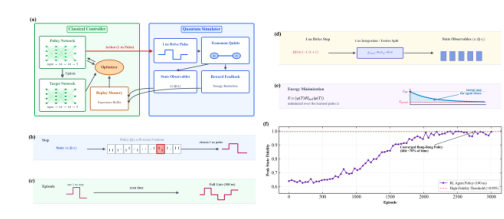
<figcaption class="paper-figure-caption"><b>Fig 1.</b> FIG. 1. Overview of the method. A reinforcement-learning- agent learns to generate a sequence of control pulses for quan- tum device. (a) The complete workflow. The policy net- work reads the current state and picks a one nanosecond drive pulse, shown as the red action arrow. This pulse is applied to the two coupled transmon qubits. The qubits are then measured, and from these measurements the agent receives the new state and a reward based on how much the energy dropped. The optimizer uses this reward, together with a tar- get network and a replay memory, to update the policy net- work. Both networks have the same shape: an input layer, two hidden layers of 64 units, and 9 action outputs....</figcaption>
</figure>
<figure class="paper-figure-card">
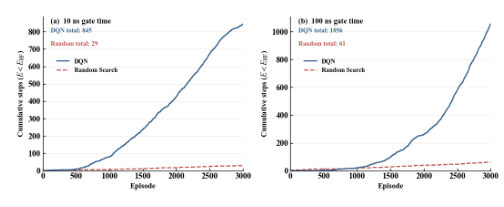
<figcaption class="paper-figure-caption"><b>Fig 2.</b> FIG. 2. Cumulative number of sub-Hartree–Fock steps (E &lt; EHF) versus training episode for the DQN policy (blue) and the random-search baseline (red), at representative scanning times of 10 ns (left) and 100 ns (right). The DQN curve accelerates with training while random search remains slow and nearly linear.</figcaption>
</figure>
<figure class="paper-figure-card">
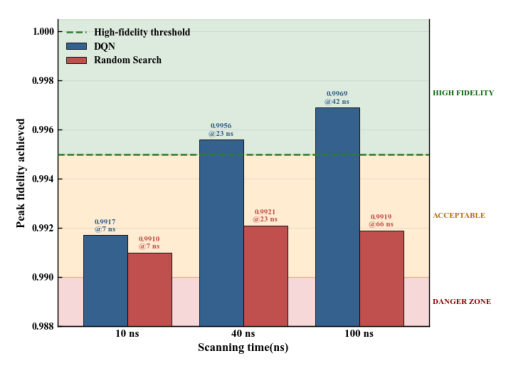
<figcaption class="paper-figure-caption"><b>Fig 3.</b> FIG. 4. Peak state fidelity achieved by the DQN policy (blue) and random search (red) at the total scanning times of 10, 40, and 100 ns. Annotations give the fidelity and the pulse duration at which it is reached. The DQN policy attains higher peak fidelity at every scanning time and is the only method to enter the high-fidelity region above 0.995.</figcaption>
</figure>
<figure class="paper-figure-card">
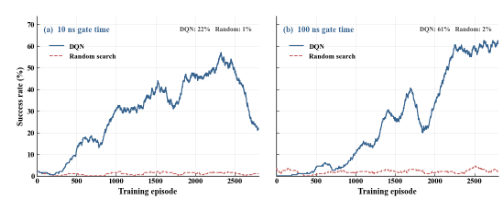
<figcaption class="paper-figure-caption"><b>Fig 4.</b> FIG. 3. Success rate (fraction of episodes with E &lt; EHF, 200-episode moving average) versus training episode for the Hydrogen dimer at 0.75 ˚A (STO-3G), at representative scan- ning times of (a) 10 ns and (b) 100 ns. The DQN policy (solid blue) improves steadily with training while the random-search baseline (dashed red) stays flat.</figcaption>
</figure>
<figure class="paper-figure-card">
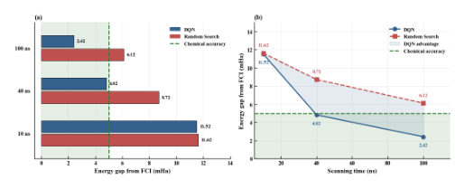
<figcaption class="paper-figure-caption"><b>Fig 5.</b> FIG. 5. Absolute energy gap from the FCI reference for the Hydrogen dimer at 0.75 ˚A (STO-3G). (a) Gap at each scan- ning time for the DQN policy (blue) and random search (red); the dashed line and shaded region mark the 5 mHa accuracy reference. (b) Energy-gap trend versus scanning time, with the shaded region indicating the DQN advantage. The DQN policy is consistently closer to FCI and the advantage widens with scanning time.</figcaption>
</figure>
</div>

<p><strong>Summary.</strong> This paper introduces an adaptive AI framework using Deep Q-Learning to optimize microwave control pulses for quantum state preparation on superconducting qubits. By treating pulse design as a sequential decision-making problem, the DQN agent autonomously discovers high-fidelity control sequences. This demonstrates a powerful, hardware-ready method for quantum control that significantly surpasses traditional search techniques.</p>
<p><strong>Why it may be interesting.</strong> This work directly addresses the practical challenge of quantum control, moving beyond model-based optimization by using adaptive AI to navigate complex, high-dimensional control landscapes relevant to superconducting qubits.</p>
<details>
<summary>Detailed structure</summary>
<p><strong>Main problem.</strong> The core problem is finding high-fidelity, optimal microwave control pulses to prepare specific quantum states, which is challenging due to the complex, continuous nature of the control landscape.</p>
<p><strong>Main result.</strong> The proposed Reinforcement Learning agent successfully discovers optimized pulse sequences that significantly outperform random search baselines, achieving high fidelity for ground-state preparation.</p>
<p><strong>Method.</strong> The authors employ a Deep Q-Network (DQN) agent, trained using a reward function derived from the energy reduction, to autonomously search the continuous control space.</p>
<p><strong>Model / system.</strong> The work is applied to superconducting qubit platforms, simulating the ground-state preparation of the Hydrogen molecule using a defined device Hamiltonian and microwave control Hamiltonian.</p>
<p><strong>Key observables.</strong> Peak state fidelity, molecular energy (relative to FCI), and the success rate of finding low-energy states.</p>
<p><strong>Important parameters / regimes.</strong> Nanosecond resolution for pulse application; training parameters include discount factor (gamma=0.99) and exploration decay ($\epsilon$).</p>
<p><strong>Assumptions / limitations.</strong> The control landscape is discretized into a 'bang-bang' form for the DQN action space, and the state evolution is calculated using a first-order Trotter split.</p>
<p><strong>Figures summary.</strong> Figures illustrate the RL workflow (state $
ightarrow$ action $
ightarrow$ reward), compare DQN vs. random search success rates and peak fidelities across different scan times (10 ns to 100 ns), and show the learned pulse patterns.</p>
<p><strong>Paper structure.</strong> The paper introduces the problem of pulse-level control, details the DQN framework (state representation via Pauli expectation values, action space, reward function), presents the results comparing DQN to random search on the H2 molecule, and concludes with implications for hardware-ready quantum control.</p>
</details>
<details>
<summary>Abstract</summary>
<p>The Control Variational Quantum Eigensolver (ctrl-VQE) directly optimizes microwave pulses to enable faster and lower-error quantum-state preparation, but its continuous control landscape re- quires efficient search strategies. We demonstrate that a reinforcement-learning agent based on a deep Q learning network can autonomously discover high-performance pulse sequences using only system parameters and a reward function. The approach is fully general for superconducting qubit platforms, requires no ansatz, and operates at nanosecond resolution compatible with hardware con- straints. As a proof of concept, we apply the method to ground-state preparation of the Hydrogen molecule on a simulated superconducting device. The agent consistently identifies optimized control sequences that achieve high fidelity and outperform random-search baselines. These results highlight adaptive learning as a promising hardware-ready framework for pulse-level quantum control.</p>
</details>
<p><sub><a href="#top">↑ back to top</a></sub></p>

<p><a id="paper-2609.08973"></a></p>
<h3 id="restart-and-first-detection-in-a-lackadaisical-quantum-walk-with-flat-band-localization"><a href="http://arxiv.org/abs/2609.08973v1">Restart and first detection in a lackadaisical quantum walk with flat-band localization</a></h3>
<p><strong>Authors:</strong> Debraj Das<br>
<strong>Type:</strong> theory · <strong>Category:</strong> statistical mechanics · <strong>PDF:</strong> <a href="https://arxiv.org/pdf/2609.08973v1">https://arxiv.org/pdf/2609.08973v1</a><br>
<strong>Analysis basis:</strong> full PDF text, analyzed in chunks
<strong>Topic relevance:</strong> <code>quantum measurements</code> <strong>3/5</strong> · <code>correlated / nonlocal dissipation</code> <strong>1/5</strong> · <code>driven-dissipative phase transition</code> <strong>1/5</strong> · <code>non-equilibrium universality</code> <strong>1/5</strong> · <code>scars &amp; prethermalization</code> <strong>1/5</strong></p>
<div class="figure-strip-hint">↔ Scroll figures horizontally</div>
<div class="paper-figures-scroll">
<figure class="paper-figure-card">
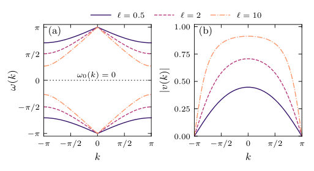
<figcaption class="paper-figure-caption"><b>Fig 1.</b> FIG. 1. (a) Quasienergy spectrum of the restart-free LDTQW for several self-loop weights ℓ. The flat band re- mains at ω0(k) = 0 (gray dotted line), while the dispersive branches ±ω(k), obtained from Eq. (9), become increasingly k dependent and span a larger quasienergy range as ℓin- creases. (b) Magnitude of the dispersive group velocity |v(k)| obtained from Eq. (10).</figcaption>
</figure>
<figure class="paper-figure-card">
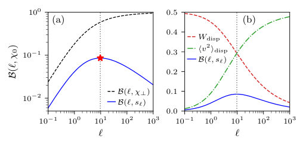
<figcaption class="paper-figure-caption"><b>Fig 2.</b> FIG. 3. Ballistic coefficients of the restart-free LDTQW as a function of the self-loop weight ℓ. (a) The blue solid line denotes Bact(ℓ) from Eq. (34), while the black dashed line rep- resents Bdark(ℓ) from Eq. (35). The red star marks the maxi- mum of Bact at ℓ∗= 4(1+ √</figcaption>
</figure>
<figure class="paper-figure-card">
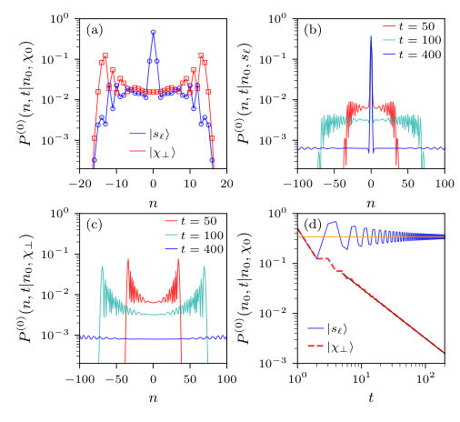
<figcaption class="paper-figure-caption"><b>Fig 3.</b> FIG. 2. Restart-free dynamics for a walker initially localized at n0 = 0 with ℓ= 2. (a) Site-occupation probability at t = 20 for the flat-band-active state |sℓ⟩(blue) and the flat- band-dark state |χ⊥⟩(red). Solid curves show the analytical result (8) and open symbols are obtained from numerical sim- ulation. (b) and (c) Site-occupation profiles at t = 50, 100, and 400 for |sℓ⟩and |χ⊥⟩, respectively. Lines are obtained from numerical simulation. (d) Return probability at the ini- tial site. The horizontal orange line marks w2 act from Eq. (29), and the black line shows the asymptotic result in Eq. (30). The blue solid line and the dashed red line are obtained from numerical simulation.</figcaption>
</figure>
<figure class="paper-figure-card">
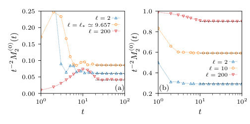
<figcaption class="paper-figure-caption"><b>Fig 4.</b> FIG. 4. Scaled MSD of the restart-free LDTQW. (a) Flat- band-active state. The black dashed line denotes Bact(ℓ) from Eq. (34). (b) Flat-band-dark state. The black dashed line denotes Bdark(ℓ) from Eq. (35). For both panels, symbols are obtained from numerical simulation and the dotted lines are guides to the eye.</figcaption>
</figure>
<figure class="paper-figure-card">
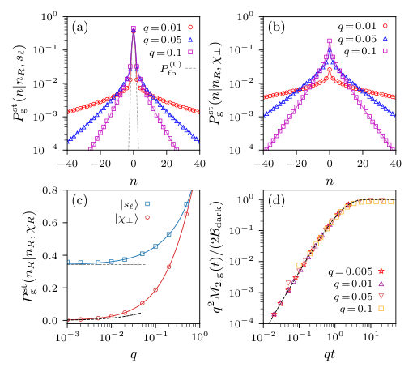
<figcaption class="paper-figure-caption"><b>Fig 5.</b> FIG. 5. Geometric restart for ℓ= 2 and nR = 0. (a) and (b) Stationary site-occupation profiles for the flat-band-active state |sℓ⟩and the flat-band-dark state |χ⊥⟩, respectively. Solid curves are stationary renewal results from Eq. (47) and symbols are numerical results averaged over 5 × 105 stochas- tic realizations. The gray dashed curve in (a) is the intrinsic flat-band profile P (0) fb (n|nR, sℓ) from Eq. (28). (c) Stationary restart-site occupation probability. Solid lines are obtained from Eq. (47), while symbols denote numerical results aver- aged over 5×105 stochastic realizations. Dashed lines in gray and black show the weak-restart limits (48) and (49), respec- tively. (d)...</figcaption>
</figure>
</div>

<p><strong>Summary.</strong> This paper analyzes a quantum walk model to separate intrinsic spectral localization from confinement effects induced by external 'restart' mechanisms. By studying geometric and power-law restarts, the authors derive scaling laws for transport observables like the mean-squared displacement. The results demonstrate that the restart process acts as a spectral discriminator, allowing the recovery of the intrinsic localized state even when the walk is perturbed.</p>
<p><strong>Why it may be interesting.</strong> The work provides a rigorous framework for understanding how external measurement or resetting processes modify fundamental quantum transport phenomena, which is relevant for open quantum systems and quantum measurement theory.</p>
<details>
<summary>Detailed structure</summary>
<p><strong>Main problem.</strong> The study investigates how different restart mechanisms (stochastic or sharp) affect the long-time spatial localization and transport properties of a quantum walk.</p>
<p><strong>Main result.</strong> The analysis distinguishes between intrinsic spectral localization (flat band) and confinement due to the restart process, showing distinct scaling behaviors for different initial states.</p>
<p><strong>Method.</strong> The research employs spectral decomposition of the quantum walk propagator and analyzes the asymptotic behavior of site-occupation probabilities and mean-squared displacement under renewal processes.</p>
<p><strong>Model / system.</strong> The model is a one-dimensional lackadaisical discrete-time quantum walk (LDTQW) defined on a lattice, characterized by a self-loop weight $\ell$. The dynamics are analyzed by decomposing the evolution into contributions from an intrinsically localized flat band and dispersive bands.</p>
<p><strong>Key observables.</strong> Mean-squared displacement ($\langle x^2 
angle$), restart-site occupation probability, stationary site-occupation distribution, and mean first-detected-passage time.</p>
<p><strong>Important parameters / regimes.</strong> Restart probability ($q$) for geometric restart, power-law exponent ($s$) for power-law restart, and the self-loop weight ($\ell$).</p>
<p><strong>Assumptions / limitations.</strong> The analysis relies on taking limits such as $q 	o 0$ or $t 	o \infty$ to characterize the long-time steady states.</p>
<p><strong>Paper structure.</strong> The paper systematically builds the analysis by first establishing the restart-free dynamics, then developing the renewal formalism for stochastic restarts (geometric and power-law), and finally analyzing the specific case of monitored first detection.</p>
</details>
<details>
<summary>Abstract</summary>
<p>We study stochastic and sharp restart in a one-dimensional lackadaisical discrete-time quantum walk with self-loop weight $\ell$. In the absence of restart, the dynamics has a flat band responsible for intrinsic localization and two dispersive bands supporting ballistic propagation. We compare two initially localized benchmark states: a flat-band-active state with finite flat-band overlap and a flat-band-dark state with zero flat-band overlap. For geometric stochastic restart with per-step restart probability $q$, the stationary mean-squared displacement scales as $q^{-2}$ as $q\to0$. In the same limit, the restart-site occupation probability approaches the restart-free intrinsic localized value for the flat-band-active state, whereas for the flat-band-dark state it vanishes as $q\ln(1/q)$. For power-law restart, where $p_m\propto m^{-s}$ is the probability that the waiting time to the next restart is $m$ steps, a normalized stationary site-occupation distribution exists only for $s>2$, while the stationary absolute spatial moment of order $p$ is finite only for $s>p+2$. In the regime $1<s\leq2$, at every fixed lattice site, the flat-band-active occupation converges to the intrinsic flat-band profile, while the flat-band-dark occupation tends to zero. We also consider monitored first detection with sharp restart, in which the walk is reinitialized after a fixed number $r$ of consecutive unsuccessful measurements. For fixed $r$, the mean first-detected-passage time of the flat-band-active state exhibits a minimum at an intermediate self-loop weight, whereas the flat-band-dark state approaches a ballistic detection limit as $\ell\to\infty$.</p>
</details>
<p><sub><a href="#top">↑ back to top</a></sub></p>

<p><a id="paper-2609.07890"></a></p>
<h3 id="riemannian-optimization-for-linear-optical-problems"><a href="http://arxiv.org/abs/2609.07890v1">Riemannian optimization for linear optical problems</a></h3>
<p><strong>Authors:</strong> Pablo V. Parellada<br>
<strong>Type:</strong> theory · <strong>Category:</strong> quantum information and computing · <strong>PDF:</strong> <a href="https://arxiv.org/pdf/2609.07890v1">https://arxiv.org/pdf/2609.07890v1</a><br>
<strong>Analysis basis:</strong> full PDF text, analyzed in chunks
<strong>Topic relevance:</strong> <code>interference shaping light</code> <strong>3/5</strong> · <code>methods for driven-dissipative</code> <strong>2/5</strong> · <code>analog quantum simulation</code> <strong>1/5</strong></p>
<div class="figure-strip-hint">↔ Scroll figures horizontally</div>
<div class="paper-figures-scroll">
<figure class="paper-figure-card">
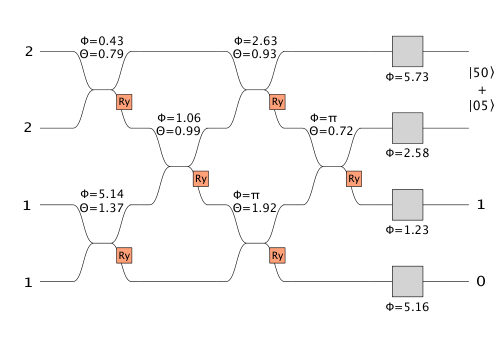
<figcaption class="paper-figure-caption"><b>Fig 1.</b> Figure 2. Passive circuit for preparing the NOON state (|50⟩+ |05⟩)/ √</figcaption>
</figure>
</div>

<p><strong>Summary.</strong> This paper develops a rigorous framework using Riemannian optimization to find optimal settings for linear optical interferometers. By deriving an analytical gradient formula for functions on the unitary manifold, the authors enable the use of advanced optimizers like BFGS. This significantly accelerates the design of quantum state preparations, improving upon current state-of-the-art methods.</p>
<p><strong>Why it may be interesting.</strong> This work provides powerful, mathematically rigorous tools for optimizing quantum optical circuits, which is crucial for designing scalable photonic quantum computation and communication protocols.</p>
<details>
<summary>Detailed structure</summary>
<p><strong>Main problem.</strong> The paper addresses the challenge of finding optimal configurations for multiport interferometers used in linear optical quantum information processing, such as maximizing state preparation fidelity.</p>
<p><strong>Main result.</strong> The authors derive a closed analytical formula for the Riemannian gradient on the unitary manifold and demonstrate that Riemannian optimization, especially using quasi-Newton methods, significantly outperforms standard gradient descent for these problems.</p>
<p><strong>Method.</strong> They employ Riemannian optimization techniques, deriving the gradient for composite functions defined on the unitary group, and comparing various optimizers like BFGS and ADAM.</p>
<p><strong>Model / system.</strong> The physical system is passive multiport interferometers, modeled by unitary scattering matrices ($S$) acting on photonic states. The optimization is performed on the manifold of these unitaries.</p>
<p><strong>Key observables.</strong> Fidelity, success probability of state preparation (e.g., NOON states), convergence rate, and mean number of iterations.</p>
<p><strong>Important parameters / regimes.</strong> The number of modes ($m$) and photons, and the step size ($\alpha_k$) used in the optimization algorithms.</p>
<p><strong>Assumptions / limitations.</strong> The optimization relies on the mathematical framework of Riemannian geometry, specifically defining the gradient on the unitary manifold, and sometimes simplifying the search space using Lie algebraic invariants.</p>
<p><strong>Figures summary.</strong> Tables compare the performance (optimality rate, iterations) of various Riemannian optimizers (GD, ADAM, BFGS, L-BFGS) across different state preparation tasks, showing BFGS/L-BFGS superiority.</p>
<p><strong>Paper structure.</strong> The paper builds from general Riemannian optimization theory to deriving the specific gradient formula for linear optics cost functions, and finally applies these optimized methods to benchmark state preparation tasks.</p>
</details>
<details>
<summary>Abstract</summary>
<p>Many applications of linear optics in quantum science involve searching for some optimal configuration of a multiport interferometer. For example, to find heralded state preparations, one can optimize the interferometer to maximize the fidelity and success probability of the state preparation. In this paper, we derive a closed analytical formula for the Riemannian gradient of any differentiable function defined over the interferometer unitaries. We use this gradient in Riemannian optimization algorithms, such as gradient descent or BFGS, to find the optimal setup of the interferometer. As an interesting use case, we search for linear optical state preparations, improving some of the success probabilities reported in the literature for NOON or photon catalysis preparations. Finally, we show that our optimizer is orders of magnitude faster than other methods in the literature, opening the door for solving linear optical problems involving more modes and photons.</p>
</details>
<p><sub><a href="#top">↑ back to top</a></sub></p>

<p><a id="paper-2609.08908"></a></p>
<h3 id="a-platform-aware-compilation-framework-for-fault-tolerant-quantum-computation"><a href="http://arxiv.org/abs/2609.08908v1">A Platform-aware Compilation Framework for Fault-tolerant Quantum Computation</a></h3>
<p><strong>Authors:</strong> Srushti Patil, Susan X. Chen, Andreas Juul Bay-Smidt, Stefan Alaric Schäffer, Peter Krogstrup, Stefano Paesani, Gemma C. Solomon<br>
<strong>Type:</strong> theory · <strong>Category:</strong> quantum information and computing · <strong>PDF:</strong> <a href="https://arxiv.org/pdf/2609.08908v1">https://arxiv.org/pdf/2609.08908v1</a><br>
<strong>Analysis basis:</strong> full PDF text, analyzed in chunks
<strong>Topic relevance:</strong> <code>analog quantum simulation</code> <strong>3/5</strong> · <code>QC/QI experiment</code> <strong>2/5</strong></p>
<div class="figure-strip-hint">↔ Scroll figures horizontally</div>
<div class="paper-figures-scroll">
<figure class="paper-figure-card">
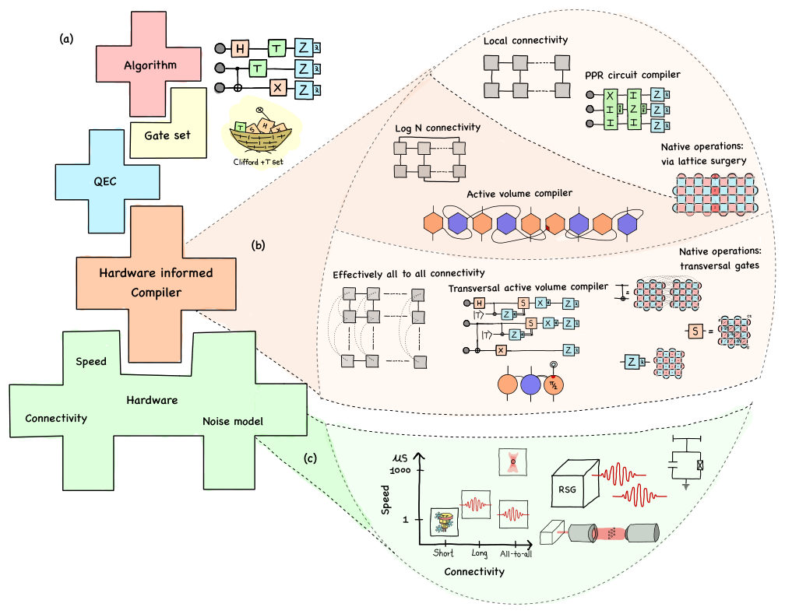
<figcaption class="paper-figure-caption"><b>Fig 1.</b> FIG. 1. Overview of the platform-aware compilation framework. (a) The full FTQC pipeline is divided into an Algorithm, a QEC, and a Hardware stack. The algorithm is expressed as a logical circuit in a universal gate set (here, Clifford+T), which the QEC code must support (surface code in this case). The hardware-informed compiler then bridges the QEC and Hardware stacks, selecting a compilation strategy from the logical operations available in the code and the platform’s connectivity, speed, and noise. (b) Circuit compilation for the three connectivity classes we consider. Local (nearest-neighbor) connectivity: the PPR compiler rewrites the circuit as Pauli product rotations, which are...</figcaption>
</figure>
<figure class="paper-figure-card">
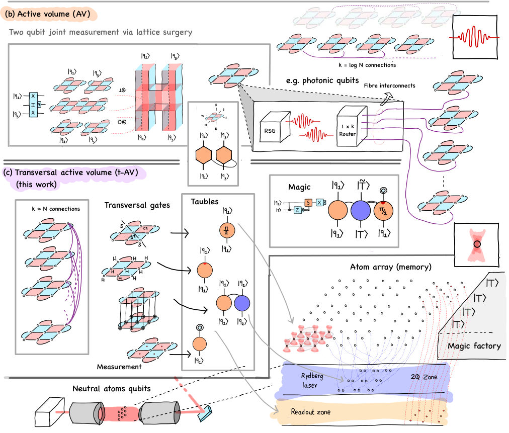
<figcaption class="paper-figure-caption"><b>Fig 2.</b> FIG. 2. Overview of compilation architectures. A logical qubit is a rotated surface-code patch (red/blue = X/Z boundaries). (a) Superconducting platform with nearest-neighbor connectivity. (left) Surface code patches sit on a static 2D grid with nearest-neighbour links (inset: transmon qubits and tunable couplers; the space-time diagram shows an idle logical qubit as a (dX, dZ, dm) cube). (right) A joint PPM is routed through an ancillary bus via lattice surgery [15], with a corresponding space-time picture. (b) Photonics platform with limited non-local connectivity using active volume architecture [16]. Each patch carries k = log N long-range links realized by fiber interconnects (inset:...</figcaption>
</figure>
<figure class="paper-figure-card">

<figcaption class="paper-figure-caption"><b>Fig 3.</b> FIG. 3. Parallelizing two operations via Bell-state teleporta- tion and bridge qubits</figcaption>
</figure>
<figure class="paper-figure-card">

<figcaption class="paper-figure-caption"><b>Fig 4.</b> FIG. 4. Runtime vs. physical-qubit count for the Stat-QPE-gap TMM use benchmark, with rmax = 20 and p = 10−3 (left) and p = 10−4 (right). Each curve represents runtime-resource tradeoffs within one architecture-hardware configuration and is generated by sweeping the scheduling parameter specific to the architecture: workspace capacity for AV, T-per-cycle for t- AV/cult-t-AV, and factory count for Baseline/Compact. We specify the considered architecture-hardware configurations in the legend to the right of the plots. For the t-AV architecture, we also specify different magic state factories that are compatible with those architecture-hardware configurations. For readability, the plot is...</figcaption>
</figure>
<figure class="paper-figure-card">

<figcaption class="paper-figure-caption"><b>Fig 5.</b> FIG. 5. Runtime vs. physical-qubit count for the Fermi-Hubbard benchmark at p = 10−3 (left) and p = 10−4 (right). See the caption of Fig. 4 for further details. Photonic t-AV reaches the lowest runtimes, while neutral-atom t-AV (cult) achieves the lowest physical qubit count, at the cost of a significantly slower code cycle.</figcaption>
</figure>
</div>

<p><strong>Summary.</strong> This paper introduces a novel, platform-aware compilation framework designed to overcome the limitation of existing quantum compilers that are locked to a single hardware architecture. By re-compiling circuits for various connectivity types, it provides comprehensive, end-to-end resource estimates for quantum simulations. This is vital for guiding the development roadmap across diverse quantum hardware modalities.</p>
<p><strong>Why it may be interesting.</strong> It provides a crucial, unified theoretical tool for comparing the resource costs of quantum algorithms across fundamentally different physical hardware architectures (superconducting, photonic, neutral atoms).</p>
<details>
<summary>Detailed structure</summary>
<p><strong>Main problem.</strong> Current quantum compilation frameworks fail to account for the variability in physical hardware platforms and error correction models, hindering cross-platform resource assessment.</p>
<p><strong>Main result.</strong> The authors present a platform-aware compilation framework that provides end-to-end resource estimates (qubits, time) for quantum simulations on diverse hardware modalities.</p>
<p><strong>Method.</strong> The framework re-compiles quantum circuits into hardware-compatible instruction sets by bridging Algorithm, Quantum Error Correction (QEC), and Hardware stacks based on connectivity.</p>
<p><strong>Model / system.</strong> The framework is benchmarked using Hamiltonian simulation of the 2D Fermi Hubbard model and eigenenergy estimation for trimethylenemethane (TMM). It analyzes three connectivity classes: nearest-neighbor, log N, and effectively all-to-all.</p>
<p><strong>Key observables.</strong> Physical-qubit count, time-to-solution, classical processing time, and required code distance (d).</p>
<p><strong>Important parameters / regimes.</strong> Connectivity type (local, log N, all-to-all), error rate (e.g., $10^{-3}$), and target logical error ($\le 0.01$).</p>
<p><strong>Assumptions / limitations.</strong> The analysis simplifies by focusing on rotated surface codes and assumes certain scaling behaviors for transversal gates and distillation processes.</p>
<p><strong>Figures summary.</strong> Figures illustrate the full FTQC pipeline, circuit compilation for different connectivity classes, and runtime scaling comparisons for TMM and Fermi-Hubbard across various architectures.</p>
<p><strong>Paper structure.</strong> The paper introduces the platform-aware framework, details the compilation strategies for different connectivity classes (PPR, t-AV), and benchmarks the framework on two key quantum simulation problems (TMM and Fermi-Hubbard).</p>
</details>
<details>
<summary>Abstract</summary>
<p>The compilation of an algorithm can vary significantly with the choice of physical hardware platform and error correction model. Yet, current compilation frameworks typically commit to a single architecture-hardware configuration, making it difficult to assess resource estimates across platforms. We present a platform-aware compilation framework that re-compiles a quantum circuit into a hardware-compatible instruction set as well as fault-tolerant operations and provides end-to-end resource estimates in terms of physical-qubit count, time-to-solution, and classical processing time. We benchmark the framework by obtaining end-to-end resource estimates for different compilers, each tailored to the functionalities of specific hardware modalities: connectivity, clock speed, and noise model. As part of this framework, we introduce a transversal active volume (t-AV) compilation architecture designed for the efficient execution of fault-tolerant operations in platforms supporting long-range logical connectivity. We benchmark the framework for Hamiltonian simulation of the 2D Fermi Hubbard model as well as for eigenenergy estimation of a small molecule (trimethylenemethane) as a candidate for early fault-tolerant demonstration of quantum chemistry. For the latter, we show that end-to-end quantum simulations can be achieved with $\sim10^4$ physical qubits and runtimes ranging from $10^2$ ms (photonics, superconducting) to $10^5$ ms (neutral atoms).</p>
</details>
<p><sub><a href="#top">↑ back to top</a></sub></p>

<p><a id="paper-2609.08839"></a></p>
<h3 id="non-perturbative-theory-of-valley-splitting-in-si-qubits-from-variational-wave-function-periodic-effects-of-shear-strain-and-asymptotic-freedom-in-the-wiggle-well-potential"><a href="http://arxiv.org/abs/2609.08839v1">Non-perturbative theory of valley splitting in Si qubits from variational wave function: periodic effects of shear strain and asymptotic freedom in the wiggle-well potential</a></h3>
<p><strong>Authors:</strong> Johannes L. P. Steinschuld, Hendrik J. Bluhm, Seyed Akbar Jafari<br>
<strong>Type:</strong> theory · <strong>Category:</strong> quantum information and computing · <strong>PDF:</strong> <a href="https://arxiv.org/pdf/2609.08839v1">https://arxiv.org/pdf/2609.08839v1</a><br>
<strong>Analysis basis:</strong> full PDF text, analyzed in chunks
<strong>Topic relevance:</strong> <code>Frenkel-Kontorova</code> <strong>3/5</strong> · <code>Keldysh / 2PI / non-Gaussian methods</code> <strong>2/5</strong></p>
<div class="figure-strip-hint">↔ Scroll figures horizontally</div>
<div class="paper-figures-scroll">
<figure class="paper-figure-card">

<figcaption class="paper-figure-caption"><b>Fig 1.</b> FIG. 1. Dispersion near the X point for Vs = 0 (dashed) and Vs = 50 meV (solid), Eq. (5). The gap 2Vs opened at the former valley crossing is the plane-wave precursor of the finite-well valley splitting derived in Sec. III. As Vs increases from zero, the minima of E−(k) move continuously toward the X point.</figcaption>
</figure>
<figure class="paper-figure-card">

<figcaption class="paper-figure-caption"><b>Fig 2.</b> FIG. 2. Probability density for the ground state (ψ+) and first excited state (ψ−), shown as gray and light-blue dashed lines, respectively, compared with the corresponding numeri- cally exact results (solid black and blue lines) for L = 20 nm and Vs = 20 meV. The variational wave functions reproduce both the overall envelope and the fine-scale modulation of the numerical densities. The lower panel shows the residuals δρ = ρnum−ρvar, which exhibits a beating pattern at the 10−4</figcaption>
</figure>
<figure class="paper-figure-card">

<figcaption class="paper-figure-caption"><b>Fig 3.</b> FIG. 3. Intervalley interference ν2(z) = 2 Im(ψ∗ 1ψ2), Eq. (16), for the ground state (ψ+ (black) and excited valley state ψ− (blue); see Sec. III): numerical (solid) vs. variational (dashed) for the same parameters as Fig. 2. As can be seen the two states are characterized by opposite valley polarization den- sities. Lower panel: residual δν2 = ν2,num −ν2,var.</figcaption>
</figure>
<figure class="paper-figure-card">

<figcaption class="paper-figure-caption"><b>Fig 4.</b> FIG. 4. Valley splitting as a function of the heterostruc- ture size L. The variational prediction from Eq. (13), shown as a dashed gray line, reproduces both the oscillatory node structure and the overall magnitude of the numerically ex- act splitting (solid black) as L varies from 5 to 80 nm at fixed Vs = 20 meV. Lower panel: relative error (with split- ting nodes masked; see text). The error remains essentially flat at the ∼1% level across the entire range.</figcaption>
</figure>
<figure class="paper-figure-card">

<figcaption class="paper-figure-caption"><b>Fig 5.</b> FIG. 5. Unlike the well-width sweep of Fig. 4, sweeping the coupling strength Vs at fixed L = 20 nm exposes a systematic breakdown of the ansatz: numerics (solid black) and Eq. (13) (dashed gray) agree to ≲1% at weak coupling, but the theory increasingly overestimates ∆E as Vs grows, reaching ∼10% by Vs ≈80 meV (lower panel; splitting node masked, see text).</figcaption>
</figure>
</div>

<p><strong>Summary.</strong> This theoretical paper develops an advanced model to predict the valley splitting energy in silicon quantum-well qubits, which is crucial for controlling spin and valley degrees of freedom. By using a specialized 'valleyor' basis, the authors analytically treat non-perturbative effects from shear strain and periodic potentials. The results provide quantitative predictions, including characteristic oscillations and a regime of 'asymptotic freedom' in the strong coupling limit.</p>
<p><strong>Why it may be interesting.</strong> The work provides highly detailed, analytical, and non-perturbative predictions for a key energy scale in silicon qubits, directly impacting the feasibility and control of spin/valley qubits for quantum computation.</p>
<details>
<summary>Detailed structure</summary>
<p><strong>Main problem.</strong> The primary challenge is accurately predicting the valley splitting energy in silicon quantum-well qubits because this energy scale is highly sensitive to the underlying interface structure.</p>
<p><strong>Main result.</strong> The authors developed an analytical framework showing that the valley splitting exhibits characteristic oscillatory dependencies on strain and that, in the strong wiggle-well coupling limit, the splitting is dominated by the empty-box energy scale, suggesting asymptotic freedom.</p>
<p><strong>Method.</strong> The study employs a two-band effective-mass model formulated in a specialized 'valleyor' basis, allowing for the non-perturbative treatment of coupling terms arising from shear strain and periodic potentials.</p>
<p><strong>Model / system.</strong> The system is silicon quantum-well qubits, modeled using a two-band effective-mass Hamiltonian that incorporates intervalley coupling terms ($V_s$ for shear strain and $V_w \cos(kwz)$ for the wiggle-well potential).</p>
<p><strong>Key observables.</strong> Valley splitting energy ($\Delta E$), local valley density ($
u_2(z)$), and the oscillatory dependence of $\Delta E$ on system length ($L$).</p>
<p><strong>Important parameters / regimes.</strong> Shear strain ($\varepsilon_{xy}$), wiggle-well amplitude ($V_w$), momentum offset ($k_1$), and the resonance condition ($k_w = 2k_1$).</p>
<p><strong>Assumptions / limitations.</strong> The analysis relies on the effective-mass approximation and the use of the valleyor basis to explicitly treat the valley degree of freedom.</p>
<p><strong>Figures summary.</strong> Figures illustrate the opening of the energy gap near the X point due to coupling, compare probability densities between numerical and variational methods, and show the resonance and diffraction-like side-lobes for the wiggle-well coupling.</p>
<p><strong>Paper structure.</strong> The paper first establishes the model in the valleyor basis, then derives analytical expressions for the splitting under uniform shear strain, and finally extends the analysis to the complex, non-perturbative effects of the wiggle-well potential, analyzing different coupling regimes.</p>
</details>
<details>
<summary>Abstract</summary>
<p>Valley splitting sets the energy scale at which spin and valley degrees of freedom hybridize in silicon quantum-well qubits, but its sensitivity to interface structure makes it difficult to predict. Using the valleyor basis, we formulate a two-band effective-mass model for intervalley coupling in a finite quantum well and develop an analytical framework for treating non-perturbative effects of shear strain and wiggle-well potentials. For a $z$-independent coupling $V_sτ_2$, corresponding to uniform shear strain, we construct a variational state from the exact plane-wave valleyors and a hard-wall envelope. This yields closed-form expressions for the two lowest states and their splitting, including the characteristic oscillatory $|\sin(k_{\rm min}L)|$ dependence. The variational result agrees with exact diagonalization to within $\sim1\%$ for realistic couplings, and provides a simple prescription for tuning the shear strain away from the nodes to enhance the valley splitting. We further show that finite barrier heights primarily renormalize the effective width of the quantum well while preserving the oscillatory dependence. For a wiggle-well coupling $V_w\cos(k_wz)τ_1$, the valleyor representation reveals a crossover near the $k_w=2k_1$ resonance from wiggle-dominated splitting to orbital quantization. Remarkably, at high wiggle-well amplitudes, the empty-box energy scale predominantly dictates the near-resonant valley splitting, while the wiggle-well potential enters only as a sub-leading correction. This behavior can be viewed as asymptotic freedom for spin qubits. Away from resonance, the splitting exhibits a broadly peaked resonance with diffraction-like side-lobes as a function of detuning.</p>
</details>
<p><sub><a href="#top">↑ back to top</a></sub></p>

<p><a id="paper-2609.07899"></a></p>
<h3 id="tensor-network-investigation-of-the-monomer-dimer-model-on-the-honeycomb-lattice"><a href="http://arxiv.org/abs/2609.07899v1">Tensor network investigation of the monomer-dimer model on the honeycomb lattice</a></h3>
<p><strong>Authors:</strong> De-Zhang Li, Jie Liu, Xin Wang<br>
<strong>Type:</strong> theory · <strong>Category:</strong> statistical mechanics · <strong>PDF:</strong> <a href="https://arxiv.org/pdf/2609.07899v1">https://arxiv.org/pdf/2609.07899v1</a><br>
<strong>Analysis basis:</strong> full PDF text, analyzed in chunks
<strong>Topic relevance:</strong> <code>methods for driven-dissipative</code> <strong>3/5</strong> · <code>analog quantum simulation</code> <strong>2/5</strong></p>
<div class="figure-strip-hint">↔ Scroll figures horizontally</div>
<div class="paper-figures-scroll">
<figure class="paper-figure-card">

<figcaption class="paper-figure-caption"><b>Fig 1.</b> Figure 1. Mapping from the monomer-dimer model on the honeycomb lattice into the Ising model on the Kagom´e lattice. The honeycomb lattice is marked in solid black lines and the Kagom´e lattice is marked in dashed blue lines.</figcaption>
</figure>
<figure class="paper-figure-card">

<figcaption class="paper-figure-caption"><b>Fig 2.</b> Figure 2. The tensor network construction depending on the local rule for the Kagom´e Ising ground states in the critical field. The definitions of the δ tensor and the P matrix are explicitly presented.</figcaption>
</figure>
<figure class="paper-figure-card">

<figcaption class="paper-figure-caption"><b>Fig 3.</b> Figure 3. The tensor network in Figure 2 is transformed into the T tensors on the square lattice. This square lattice tensor network is obtained by performing an SVD on the P matrices and contracting the internal indices of each unit consisting of two nearest-neighbour Ising triangles.</figcaption>
</figure>
<figure class="paper-figure-card">

<figcaption class="paper-figure-caption"><b>Fig 4.</b> Figure 4. The vertex configurations of the sixteen-vertex model. Each solid line represents a bonded edge, while each dashed line represents an unbonded edge. The even eight-vertex model consists of vertices (1)–(8), while the odd subcase consists of vertices (9)–(16).</figcaption>
</figure>
<figure class="paper-figure-card">

<figcaption class="paper-figure-caption"><b>Fig 5.</b> Figure 5. (a) The vertex unit of the monomer-dimer model on the honeycomb lattice with the associated dimer and monomer activities. (b) Two monomer-dimer arrangements of the unit corresponding to vertex (1) of the sixteen-vertex model in Figure 4.</figcaption>
</figure>
</div>

<p><strong>Summary.</strong> This paper applies advanced tensor network methods, specifically VUMPS, to calculate the residual entropy of the monomer-dimer model on the honeycomb lattice. The model is mapped onto the ground state problem of an antiferromagnetic Ising model on the Kagomé lattice. The results provide high-precision estimates for the entropy, advancing the understanding of this classically difficult lattice problem.</p>
<p><strong>Why it may be interesting.</strong> While the focus is on classical statistical mechanics, the use of advanced tensor network techniques (VUMPS) for calculating ground state degeneracies is a powerful numerical tool applicable to quantum many-body systems, making it relevant for understanding quantum phase transitions.</p>
<details>
<summary>Detailed structure</summary>
<p><strong>Main problem.</strong> The paper investigates the monomer-dimer model on the honeycomb lattice, a well-known unsolved problem in statistical mechanics.</p>
<p><strong>Main result.</strong> The authors calculate the residual entropy of the model using tensor networks, finding specific numerical values for the entropy per site.</p>
<p><strong>Method.</strong> The primary method employed is the tensor network approach, specifically using the Variational Uniform Matrix Product State (VUMPS) algorithm to calculate the ground state degeneracy.</p>
<p><strong>Model / system.</strong> The system is the monomer-dimer model on the honeycomb lattice, which is mapped exactly to the ground states of the antiferromagnetic Ising model on the Kagomé lattice in a critical field.</p>
<p><strong>Key observables.</strong> Residual entropy ($\lim_{N	o\infty} rac{1}{N} \ln Z$) per honeycomb site ($   ext{Shon}$) and per Kagomé site ($    ext{SKag}$).</p>
<p><strong>Important parameters / regimes.</strong> The dimer and monomer activities are set to 1, and the analysis focuses on the critical field $H_{
m{ex}}=4J$ for the Ising model.</p>
<p><strong>Assumptions / limitations.</strong> The solution is assumed to be equivalent to the ground state degeneracy of the specified Ising model, and the VUMPS method provides an approximation for the infinite lattice limit.</p>
<p><strong>Figures summary.</strong> Figure 1 illustrates the mapping from the monomer-dimer model to the Ising model. Figure 2 shows the tensor network construction for the Ising ground states, and Figure 3 shows the transformation of this network to tensors on a square lattice.</p>
<p><strong>Paper structure.</strong> The paper first establishes the equivalence between the monomer-dimer model and the Ising model on the Kagomé lattice. It then details the construction of the tensor network and applies the VUMPS algorithm to calculate the residual entropy. Finally, it discusses alternative formulations using the sixteen-vertex model and the pure dimer limit.</p>
</details>
<details>
<summary>Abstract</summary>
<p>The monomer-dimer model is one of the most well-known unsolved lattice models. In this paper we study the monomer-dimer model on the honeycomb lattice using the tensor network method, in the case that the dimer and monomer activities are 1. The monomer-dimer configurations are exactly mapped into the ground states of the antiferromagnetic Ising model on the Kagomé lattice in the critical field $H_{\rm{ex}}=4J$, and the tensor network is constructed based on the local ground states of each Ising triangle. The VUMPS approach is employed to contract the tensor network, providing a high-precision result of the monomer-dimer problem. We also revisit the edge coloring problem on the honeycomb lattice and discuss its relationship to the monomer-dimer model. Finally we formulate the monomer-dimer problem in the language of the sixteen-vertex model, and discuss the non-integrability of the general monomer-dimer model and the integrability of the pure dimer model.</p>
</details>
<p><sub><a href="#top">↑ back to top</a></sub></p>

<p><a id="paper-2609.08208"></a></p>
<h3 id="increase-of-magnetic-trap-loading-efficiency-for-math291math-bose-einstein-condensation-experiments"><a href="http://arxiv.org/abs/2609.08208v1">Increase of Magnetic Trap Loading Efficiency for $^{39}\mathrm{K}$ Bose--Einstein Condensation Experiments</a></h3>
<p><strong>Authors:</strong> Yihao Cheng, Xiaoyang Shen, Weixin Li, Hao Du, Hongwu Zhao, Lin Xia<br>
<strong>Type:</strong> experiment · <strong>Category:</strong> quantum gases · <strong>PDF:</strong> <a href="https://arxiv.org/pdf/2609.08208v1">https://arxiv.org/pdf/2609.08208v1</a><br>
<strong>Analysis basis:</strong> full PDF text, analyzed in chunks
<strong>Topic relevance:</strong> <code>analog quantum simulation</code> <strong>3/5</strong> · <code>quantum measurements</code> <strong>1/5</strong></p>
<div class="figure-strip-hint">↔ Scroll figures horizontally</div>
<div class="paper-figures-scroll">
<figure class="paper-figure-card">

<figcaption class="paper-figure-caption"><b>Fig 1.</b> Figure 1: Absorption image of the 39K atomic cloud after MT loading. The picture is taken after 7 ms free expansion. The picture size is 11.84 × 7.70 mm2.</figcaption>
</figure>
<figure class="paper-figure-card">

<figcaption class="paper-figure-caption"><b>Fig 2.</b> Fig. 1 shows an absorption image of the atomic cloud after MT loading. At a coil current of 26 A, we get 7.95 × 108 atoms loaded into the MT. There are two main reasons for the atom loss. One is that the atomic cloud has a high optical depth after the GM stage. As a result, the pumping light is completely absorbed before reaching the central part of the cloud, which limits the optical pumping efficiency. The other is that the magnetic field gradient is not sufficient. The</figcaption>
</figure>
<figure class="paper-figure-card">

<figcaption class="paper-figure-caption"><b>Fig 3.</b> Figure 2: Sequence of the MT loading process. Red dashed line: initial sequence with the current fixed at 26 A. Solid line: optimized sequence, in which the current is first held at a higher value IMT for 60 ms, then linearly ramped down to 26 A in 100 ms, and held for another 60 ms.</figcaption>
</figure>
<figure class="paper-figure-card">

<figcaption class="paper-figure-caption"><b>Fig 4.</b> Figure 3: Atoms loaded into the MT with different IMT . By increasing IMT from 26 A to 35 A, the number of loaded atoms improves by 15%. Three measurements are taken for each point.</figcaption>
</figure>
<figure class="paper-figure-card">

<figcaption class="paper-figure-caption"><b>Fig 5.</b> Figure 4: Atom number decay in the MT at 26 A. The solid line is an exponential fit, yielding a 1/e lifetime of 29.8 s.</figcaption>
</figure>
</div>

<p><strong>Summary.</strong> This paper reports experimental improvements in loading efficiency for $^{39}\mathrm{K}$ atoms into a magnetic trap, achieving a 15% increase by optimizing the loading current and sequence. By maximizing the initial atom number, the authors successfully created a high-quality Bose-Einstein Condensate, establishing better conditions for subsequent quantum gas research.</p>
<p><strong>Why it may be interesting.</strong> This work provides crucial experimental data on optimizing the initial loading stage for ultracold atomic gases, which is a fundamental prerequisite for studying complex many-body physics in BECs.</p>
<details>
<summary>Detailed structure</summary>
<p><strong>Main problem.</strong> The primary goal was to achieve the stable production of high-quality Bose-Einstein Condensates (BEC) for $^{39}\mathrm{K}$ atoms, which necessitates maximizing the initial atom number loaded into the trap.</p>
<p><strong>Main result.</strong> The authors successfully increased the magnetic trap loading efficiency by approximately 15% through optimization of the loading sequence, resulting in a pure $^{39}\mathrm{K}$ condensate with $1.2	imes10^{5}$ atoms.</p>
<p><strong>Method.</strong> The optimization involved systematically varying the magnetic trap loading current ($I_{	ext{MT}}$) and implementing a specific three-step loading sequence.</p>
<p><strong>Model / system.</strong> The experiment uses $^{39}\mathrm{K}$ ultracold atoms trapped sequentially in a Magneto-Optical Trap (MOT), a magnetic trap (MT), and finally cooled in an optical dipole trap.</p>
<p><strong>Key observables.</strong> Loaded atom number (measured after free expansion), BEC atom number ($1.2	imes10^{5}$ atoms), and atom decay rates over time.</p>
<p><strong>Important parameters / regimes.</strong> Optimized MT current range ($26 	ext{ A}$ to $35 	ext{ A}$), initial magnetic field gradient ($\approx 1.23 	ext{ G} \cdot 	ext{cm}^{-1} \cdot 	ext{A}^{-1}$), and trap lifetime ($    ext{1/e}$ lifetime of $29.8 	ext{ s}$).</p>
<p><strong>Assumptions / limitations.</strong> The atom loss during the loading process due to the finite trap lifetime was found to be negligible compared to the loading time.</p>
<p><strong>Figures summary.</strong> Figures illustrate the initial MT loading state, the optimized three-step loading sequence, the dependence of loaded atom number on $I_{	ext{MT}}$ (showing the 15% improvement), and the BEC transition during evaporative cooling.</p>
<p><strong>Paper structure.</strong> The paper details the necessity of high atom numbers, presents the optimization of the MT loading process using a specific current ramping sequence, reports the resulting increase in loading efficiency, and concludes with the successful observation of the BEC.</p>
</details>
<details>
<summary>Abstract</summary>
<p>During the experimental sequence, a large atom number is important for the creation of high-quality Bose--Einstein condensates. We report an experimental increase of about 15% in magnetic-trap (MT) loading efficiency by optimizing the MT loading process. The loading time is much shorter than the lifetime of the atoms in the MT, which means atom loss during loading due to the finite trap lifetime can be neglected. We obtain an almost pure $^{39}\mathrm{K}$ condensate with $1.2\times10^{5}$ atoms after evaporative cooling in our optical trap.</p>
</details>
<p><sub><a href="#top">↑ back to top</a></sub></p>

<p><a id="paper-2609.09003"></a></p>
<h3 id="simultaneous-sub-doppler-laser-cooling-and-optical-trapping-of-bosonic-math306mathk-math307mathcs-and-math308mathk-math309mathcs-mixtures"><a href="http://arxiv.org/abs/2609.09003v1">Simultaneous sub-Doppler laser cooling and optical trapping of bosonic $^{39}$K-$^{133}$Cs and $^{41}$K-$^{133}$Cs mixtures</a></h3>
<p><strong>Authors:</strong> Mateusz Bocheński, Jakub Dobosz, Koray Dinçer, Paweł Arciszewski, Mariusz Semczuk<br>
<strong>Type:</strong> experiment · <strong>Category:</strong> other · <strong>PDF:</strong> <a href="https://arxiv.org/pdf/2609.09003v1">https://arxiv.org/pdf/2609.09003v1</a><br>
<strong>Analysis basis:</strong> full PDF text, analyzed in chunks
<strong>Topic relevance:</strong> <code>analog quantum simulation</code> <strong>3/5</strong> · <code>quantum optics experiment</code> <strong>1/5</strong></p>
<div class="figure-strip-hint">↔ Scroll figures horizontally</div>
<div class="paper-figures-scroll">
<figure class="paper-figure-card">

<figcaption class="paper-figure-caption"><b>Fig 1.</b> FIG. 1. Transfer efficiency from gray optical molasses into the optical dipole trap for 41K (a,c) and Cs (b,d) atoms. The efficiency is presented as a function of the loading time (a,b) and the intensities of gray molasses light (c,d). The red curve on the top plots is presented as a guide to the eye.</figcaption>
</figure>
<figure class="paper-figure-card">

<figcaption class="paper-figure-caption"><b>Fig 2.</b> FIG. 2. Fluorescence images of magnetically separated 39K samples after heteronuclear Feshbach spectroscopy. Each im- age shows three spatially separated potassium clouds corre- sponding to the magnetic sublevels of the F = 1 state with mF = {1, 0, −1}, denoted as |a⟩, |b⟩and |c⟩, respectively. From left to right: reference image (no loss feature), and three cases showing atom loss due to Feshbach resonances between 39K and 133Cs in the channels indicated at the top of each panel.</figcaption>
</figure>
<figure class="paper-figure-card">

<figcaption class="paper-figure-caption"><b>Fig 3.</b> FIG. 3. Number of atoms as a function of magnetic field for three collision channels |a⟩+|a⟩(top, black), |b⟩+|a⟩(middle, red), and |c⟩+ |a⟩(bottom, purple) present simultaneously in the trapped sample. The first state label denotes the magnetic sublevel of 39K and the second that of 133Cs. The measure- ments illustrate the simultaneous spin-resolved detection of Feshbach loss features using Stern-Gerlach separation.</figcaption>
</figure>
<figure class="paper-figure-card">

<figcaption class="paper-figure-caption"><b>Fig 4.</b> FIG. 4. Overview of losses in 39K atoms present due to the heteronuclear 39K-Cs Feshbach resonances. Empirical Lorentzian profiles are fitted to the loss spectra to determine their centers and FWHM. Different colors correspond to different collision channels, as presented in the legend. Homonuclear losses are omitted for clarity.</figcaption>
</figure>
<figure class="paper-figure-card">

<figcaption class="paper-figure-caption"><b>Fig 5.</b> FIG. 5. Normalized atom-number decay in the optical dipole trap for single-species samples and for both components of the K-Cs mixtures. The upper panel shows measurements for the 39K-Cs mixture and the lower panel for the 41K-Cs mixture. In each panel, the decay of potassium and cesium in the mix- ture is compared with the corresponding single-species decay. The solid curves are phenomenological double-exponential fits used to characterize the fast and slow components of the ob- served decay. We do not assign fitted time scales to individual microscopic loss processes. Atom numbers are normalized to their values at the first measured trapping time.</figcaption>
</figure>
</div>

<p><strong>Summary.</strong> This paper reports the first realization of simultaneously cooling and trapping ultracold mixtures of $^{39}	ext{K}$ and $^{41}	ext{K}$ with $^{133}	ext{Cs}$. The researchers achieved temperatures around $10 \mu	ext{K}$ and performed detailed Feshbach spectroscopy on the $^{39}	ext{K}$ mixture, while also characterizing the decay dynamics of the $^{41}	ext{K}$ mixture. This opens new avenues for studying quantum interactions and forming ground-state molecules in these alkali systems.</p>
<p><strong>Why it may be interesting.</strong> This work pushes the boundaries of cold atom techniques by successfully cooling and trapping multiple, different potassium isotopes with cesium, providing a rich platform for studying interspecies interactions and molecular formation pathways.</p>
<details>
<summary>Detailed structure</summary>
<p><strong>Main problem.</strong> The primary goal was to achieve simultaneous sub-Doppler laser cooling and optical dipole trapping of bosonic mixtures involving $^{39}	ext{K}$ and $^{41}	ext{K}$ with $^{133}	ext{Cs}$.</p>
<p><strong>Main result.</strong> The authors successfully demonstrated this for the first time with $^{41}	ext{K}-^{133}	ext{Cs}$ and observed 14 novel heteronuclear Feshbach loss features in the $^{39}	ext{K}-^{133}	ext{Cs}$ mixture.</p>
<p><strong>Method.</strong> The experiment utilized multiple advanced cooling stages, including D1-line gray molasses and D2 transitions, followed by confinement in a 1064 nm optical dipole trap.</p>
<p><strong>Model / system.</strong> The system involves ultracold, bosonic mixtures of alkali atoms ($^{39}	ext{K}, ^{41}	ext{K}, ^{133}	ext{Cs}$) confined in an optical dipole trap, allowing for precise spectroscopic measurements.</p>
<p><strong>Key observables.</strong> Temperatures ($\sim 10 \mu	ext{K}$), atom loss features (Feshbach resonances), and decay dynamics (nonexponential loss rates).</p>
<p><strong>Important parameters / regimes.</strong> Trap frequencies ($\sim 60-148$ Hz), cooling detunings, and magnetic field variations used for spectroscopy.</p>
<p><strong>Assumptions / limitations.</strong> The shorter lifetime of the $^{41}	ext{K}-^{133}	ext{Cs}$ mixture currently limits systematic Feshbach spectroscopy, and the decay dynamics suggest density-dependent loss mechanisms.</p>
<p><strong>Figures summary.</strong> Figures illustrate transfer efficiency from molasses to the trap, and fluorescence images show spatially separated atomic clouds after spectroscopy.</p>
<p><strong>Paper structure.</strong> The paper details the sequential experimental procedure: initial cooling stages (MOT, CMOT, GMC), followed by spin polarization, trapping in the dipole trap, and finally performing spin-resolved Feshbach spectroscopy and decay rate measurements.</p>
</details>
<details>
<summary>Abstract</summary>
<p>We report simultaneous sub-Doppler cooling and optical dipole trapping of $^{39}$K-Cs and $^{41}$K-Cs mixtures. Both mixtures are cooled to temperatures $\sim10$ $\mathrmμ$K, achieving performance comparable to that obtained with each species individually. To the best of our knowledge, this constitutes the first realization of a laser-cooled and optically trapped $^{41}$K-Cs mixture. For the $^{39}$K-Cs mixture, we additionally implement parallel spin-resolved Feshbach spectroscopy enabled by Stern-Gerlach separation.   For potassium isotopes, we implement sub-Doppler cooling with $D_1$-line gray molasses, while for cesium the entire cooling sequence is implemented using $D_2$ transitions. We spin-polarize the atoms and confine Bose-Bose mixtures in a 1064 nm optical dipole trap. Using the resulting $^{39}$K-Cs samples, we observe 14 heteronuclear Feshbach loss features. Five agree with resonances reported previously, while nine have, to the best of our knowledge, not been observed experimentally before, including $p$-wave features and resonances in additional spin channels.   The shorter lifetime of the $^{41}$K-Cs mixture in the optical dipole trap currently hinders systematic Feshbach spectroscopy, which we therefore do not pursue in this work. To characterize this limitation quantitatively, we study the decay dynamics of $^{39}$K-Cs and $^{41}$K-Cs mixtures under comparable temperature and density conditions, revealing a substantially stronger nonexponential loss in the $^{41}$K-Cs mixture. The demonstrated preparation of ultracold $^{41}$K-Cs mixtures provides a starting point for Feshbach-resonance and photoassociation spectroscopy of this previously unexplored isotopologue. Such measurements are essential for identifying suitable pathways for magnetoassociation and coherent optical transfer, and ultimately for the production of ultracold ground-state $^{41}$KCs molecules.</p>
</details>
<p><sub><a href="#top">↑ back to top</a></sub></p>

<p><a id="paper-2609.08635"></a></p>
<h3 id="finite-size-entanglement-certification-via-third-order-local-randomized-measurements"><a href="http://arxiv.org/abs/2609.08635v1">Finite-size Entanglement Certification via Third-Order Local Randomized Measurements</a></h3>
<p><strong>Authors:</strong> Giovanni Scala, Corrado Cosimo Mattiacci, Dorota Pietryka, Gniewomir Sarbicki<br>
<strong>Type:</strong> theory · <strong>Category:</strong> quantum information and computing · <strong>PDF:</strong> <a href="https://arxiv.org/pdf/2609.08635v1">https://arxiv.org/pdf/2609.08635v1</a><br>
<strong>Analysis basis:</strong> full PDF text, analyzed in chunks
<strong>Topic relevance:</strong> <code>quantum measurements</code> <strong>3/5</strong></p>
<div class="figure-strip-hint">↔ Scroll figures horizontally</div>
<div class="paper-figures-scroll">
<figure class="paper-figure-card">

<figcaption class="paper-figure-caption"><b>Fig 1.</b> FIG. 2. Detection performance for the equal-dimensional Bures-perturbed ensemble with ε = 0.15. The three plots show respectively the NPT-conditioned third-order efficiency η3, the relative gain G32 and the advantage ∆32 = η3 −η2. Markers are placed at normalized-negativity-bin midpoints, and the shaded regions are pointwise 95% paired-bootstrap intervals. Gaps in G32 occur where N2 = 0.</figcaption>
</figure>
<figure class="paper-figure-card">

<figcaption class="paper-figure-caption"><b>Fig 2.</b> FIG. 3. Detection performance for the qubit-qudit ensemble with ε = 0.15 in Bures perturbation. The three plots show re- spectively the NPT-conditioned third-order efficiency η3, the relative gain G32 and the advantage ∆32 = η3 −η2. Markers are placed at normalized-negativity-bin midpoints, and the shaded regions are pointwise 95% paired-bootstrap intervals. Gaps in G32 occur where N2 = 0.</figcaption>
</figure>
</div>

<p><strong>Summary.</strong> This paper introduces a novel, scalable method to certify entanglement in high-dimensional quantum states by extending local randomized measurements to third order. This third-order information allows for the detection of entanglement that is invisible using standard second-order tests. The framework provides dimension-independent error bounds, offering a practical path for experimental quantum characterization.</p>
<p><strong>Why it may be interesting.</strong> This work provides a concrete, resource-efficient protocol for quantifying entanglement in complex quantum systems, which is highly relevant for experimental quantum information processing platforms.</p>
<details>
<summary>Detailed structure</summary>
<p><strong>Main problem.</strong> The paper addresses the challenge of developing a scalable method to certify entanglement in high-dimensional quantum systems, circumventing the exponential cost of full state tomography.</p>
<p><strong>Main result.</strong> They derive a finite-size entanglement certificate that extends local randomized measurements to third order, revealing entanglement missed by second-order tests.</p>
<p><strong>Method.</strong> The method utilizes a third-order extension of local randomized measurements to test the positivity of a specific operator (the Projective Reduction Criterion), which is then analyzed using moment matrix reconstruction techniques.</p>
<p><strong>Model / system.</strong> The focus is on certifying entanglement for a general bipartite quantum state $
ho$ in high-dimensional Hilbert spaces ($\mathcal{C}_A \otimes \mathcal{C}_B$). The analysis is generalized to qubits-qudit ensembles.</p>
<p><strong>Key observables.</strong> The primary observables are the local unitary invariants ($x_1$ through $x_{10}$) and the minimum eigenvalue ($\lambda_{\min}$) of the constructed matrix $ar{M}(
ho)$, which serves as the entanglement certificate.</p>
<p><strong>Important parameters / regimes.</strong> The performance is analyzed in terms of detection efficiency ($\eta_3$), relative gain ($G_{32}$), and the dimension $d$ of the subsystems.</p>
<p><strong>Assumptions / limitations.</strong> The protocol assumes the availability of trusted local random unitaries drawn from the Haar measure, and the finite-sample error bounds rely on concentration inequalities like Markov's or McDiarmid's.</p>
<p><strong>Figures summary.</strong> Figure 1 illustrates the 10 index-equality classes used for three-outcome measurements. Figure 3 compares the detection performance ($\eta_3, G_{32}, \Delta_{32}$) for the qubit-qudit ensemble.</p>
<p><strong>Paper structure.</strong> The paper builds from the theoretical requirement (the reduction criterion) to the practical measurement scheme (local randomized measurements up to third order), followed by rigorous analysis of finite-sample error bounds using moment matrix reconstruction.</p>
</details>
<details>
<summary>Abstract</summary>
<p>Certifying entanglement in high-dimensional systems usually requires full state tomography, whose cost grows rapidly with the system dimension. Local randomized measurements offer a scalable alternative, but existing tests based on second-order correlations access only limited information about the state. Here, we derive a finite-size entanglement certificate that extends local randomized measurements to third order. The additional third-order information reveals entanglement that remains undetected at second order, while a dimension-independent concentration bound provides rigorous control of finite-sample errors. Our result opens a practical route to extracting stronger entanglement information from experimental platforms without the dimension-dependent overhead of state tomography.</p>
</details>
<p><sub><a href="#top">↑ back to top</a></sub></p>
<hr>
<p>
<a href="index.html">← Index</a>
 · <a href="papers_01.html">← Previous</a> · <a href="papers_03.html">Next →</a>
</p>
<hr>

</body>
</html>
